1 A Review of Statistics using R
This second section reviews important statistical concepts that are heavily used in biology:
Estimation of unknown population parameters
Hypothesis testing
Confidence intervals
Linear regression with one variable
We will discuss the first three in the simple context of inference about an unknown population mean and discuss several applications in R. These R applications rely on the following packages which are not part of the base version of R:
readxl - allows to import data from Excel to R.
dplyr - provides a flexible grammar for data manipulation.
MASS - a collection of functions for applied statistics.
Make sure these are installed before you go ahead and try to replicate the examples. The safest way to do so is by checking whether the following code chunk executes without any errors.
library(dplyr)
library(MASS)
library(readxl)We will then cover the basics of linear regression and show how to perform regression analysis in R. In linear regression, the aim is to model the relationship between a dependent variable \(Y\) and one or more explanatory variables denoted by \(X_1, X_2, \dots, X_k\). In simple linear regression, that we will focus on first, there is just one explanatory variable \(X_1\).
If, for example, if we have a single nucleotide genetic marker \(X_1\), we would like to know how changing the base-pair would affect \(Y\), the height of individuals? With linear regression we can not only examine whether the marker does have an impact on height, but we can also learn about the direction and the strength of this effect.
1.1 Estimation of the Population Mean
Key Concept 8
Estimators and Estimates
Estimators are functions of sample data drawn from an unknown population. Estimates are numeric values computed by estimators based on the sample data. Estimators are random variables because they are functions of random data. Estimates are nonrandom numbers.
Think of some variable, let's say hourly income in Switzerland, denoted by \(Y\). Suppose we are interested in \(\mu_Y\) the mean of \(Y\). In order to exactly calculate \(\mu_Y\) we would have to determine the hourly income of every individual in Switzerland today. We simply cannot do this due to time and cost constraints. However, we can draw a random sample of \(n\) i.i.d. observations \(Y_1, \dots, Y_n\) and estimate \(\mu_Y\) using one of the simplest estimators one can think of, that is,
\[ \overline{Y} = \frac{1}{n} \sum_{i=1}^n Y_i, \]
the sample mean of \(Y\). Then again, we could use an even simpler estimator for \(\mu_Y\): the very first observation in the sample, \(Y_1\). Is \(Y_1\) a good estimator? For now, assume that
\[ Y \sim \chi_{12}^2 \]
which is not too unreasonable as hourly income is non-negative and we expect many hourly earnings to be in a range of \(5€\,\) to \(15€\). Moreover, it is common for income distributions to be skewed to the right — a property of the \(\chi^2_{12}\) distribution.
# plot the chi_12^2 distribution
curve(dchisq(x, df=12),
from = 0,
to = 40,
ylab = "density",
xlab = "hourly earnings in Euro")
We now draw a sample of \(n=100\) observations and take the first observation \(Y_1\) as an estimate for \(\mu_Y\)
# set seed for reproducibility
set.seed(1)
# sample from the chi_12^2 distribution, use only the first observation
rsamp <- rchisq(n = 100, df = 12)
rsamp[1]## [1] 8.257893The estimate \(8.26\) is not too far away from \(\mu_Y = 12\) but it is somewhat intuitive that we could do better: the estimator \(Y_1\) discards a lot of information and its variance is the population variance:
\[ \text{Var}(Y_1) = \text{Var}(Y) = 2 \cdot 12 = 24 \]
This brings us to the following question: What is a good estimator of an unknown parameter in the first place? This question is tackled in Key Concept 9.
Key Concept 9
Bias, Consistency and Efficiency
Desirable characteristics of an estimator include unbiasedness, consistency and efficiency.
Unbiasedness:
If the mean of the sampling distribution of some estimator \(\hat\mu_Y\) for the population mean \(\mu_Y\) equals \(\mu_Y\), \[ E(\hat\mu_Y) = \mu_Y, \] the estimator is unbiased for \(\mu_Y\).
The bias of \(\hat\mu_Y\) then is \(0\): \[ E(\hat\mu_Y) - \mu_Y = 0\] Consistency:
We want the uncertainty of the estimator \(\mu_Y\) to decrease as the number of observations in the sample grows. More precisely, we want the probability that the estimate \(\hat\mu_Y\) falls within a small interval around the true value \(\mu_Y\) to get increasingly closer to \(1\) as \(n\) grows.
We write this as \[ \hat\mu_Y \xrightarrow{p} \mu_Y. \]
Variance and efficiency: We want the estimator to be efficient. Suppose we have two estimators, \(\hat\mu_Y\) and \(\overset{\sim}{\mu}_Y\) and for some given sample size \(n\) it holds that \[ E(\hat\mu_Y) = E(\overset{\sim}{\mu}_Y) = \mu_Y \] but \[\text{Var}(\hat\mu_Y) < \text{Var}(\overset{\sim}{\mu}_Y).\] We then prefer to use \(\hat\mu_Y\) as it has a lower variance than \(\overset{\sim}{\mu}_Y\), meaning that \(\hat\mu_Y\) is more efficient in using the information provided by the observations in the sample.
1.2 Properties of the Sample Mean
A more precise way to express consistency of an estimator \(\hat\mu\) for a parameter \(\mu\) is \[ P(|\hat{\mu} - \mu|<\epsilon) \xrightarrow[n \rightarrow \infty]{p} 1 \quad \text{for any}\quad\epsilon>0.\].
This expression says that the probability of observing a deviation from the true value \(\mu\) that is smaller than some arbitrary \(\epsilon > 0\) converges to \(1\) as \(n\) grows. Consistency does not require unbiasedness.
To examine properties of the sample mean as an estimator for the corresponding population mean, consider the following R example.
We generate a population pop consisting of observations \(Y_i\), \(i=1,\dots,10000\) that origin from a normal distribution with mean \(\mu = 10\) and variance \(\sigma^2 = 1\).
To investigate the behavior of the estimator \(\hat{\mu} = \bar{Y}\) we can draw random samples from this population and calculate \(\bar{Y}\) for each of them. This is easily done by making use of the function replicate(). The argument expr is evaluated n times. In this case we draw samples of sizes \(n=5\) and \(n=25\), compute the sample means and repeat this exactly \(N=25000\) times.
For comparison purposes we store results for the estimator \(Y_1\), the first observation in a sample for a sample of size \(5\), separately.
# generate a fictious population
pop <- rnorm(10000, 10, 1)
# sample from the population and estimate the mean
est1 <- replicate(expr = mean(sample(x = pop, size = 5)), n = 25000)
est2 <- replicate(expr = mean(sample(x = pop, size = 25)), n = 25000)
fo <- replicate(expr = sample(x = pop, size = 5)[1], n = 25000)Check that est1 and est2 are vectors of length \(25000\):
# check if object type is vector
is.vector(est1)## [1] TRUEis.vector(est2)## [1] TRUE# check length
length(est1)## [1] 25000length(est2)## [1] 25000The code chunk below produces a plot of the sampling distributions of the estimators \(\bar{Y}\) and \(Y_1\) on the basis of the \(25000\) samples in each case. We also plot the density function of the \(\mathcal{N}(10,1)\) distribution.
# plot density estimate Y_1
plot(density(fo),
col = 'green',
lwd = 2,
ylim = c(0, 2),
xlab = 'estimates',
main = 'Sampling Distributions of Unbiased Estimators')
# add density estimate for the distribution of the sample mean with n=5 to the plot
lines(density(est1),
col = 'steelblue',
lwd = 2,
bty = 'l')
# add density estimate for the distribution of the sample mean with n=25 to the plot
lines(density(est2),
col = 'red2',
lwd = 2)
# add a vertical line at the true parameter
abline(v = 10, lty = 2)
# add N(10,1) density to the plot
curve(dnorm(x, mean = 10),
lwd = 2,
lty = 2,
add = T)
# add a legend
legend("topleft",
legend = c("N(10,1)",
expression(Y[1]),
expression(bar(Y) ~ n == 5),
expression(bar(Y) ~ n == 25)
),
lty = c(2, 1, 1, 1),
col = c('black','green', 'steelblue', 'red2'),
lwd = 2)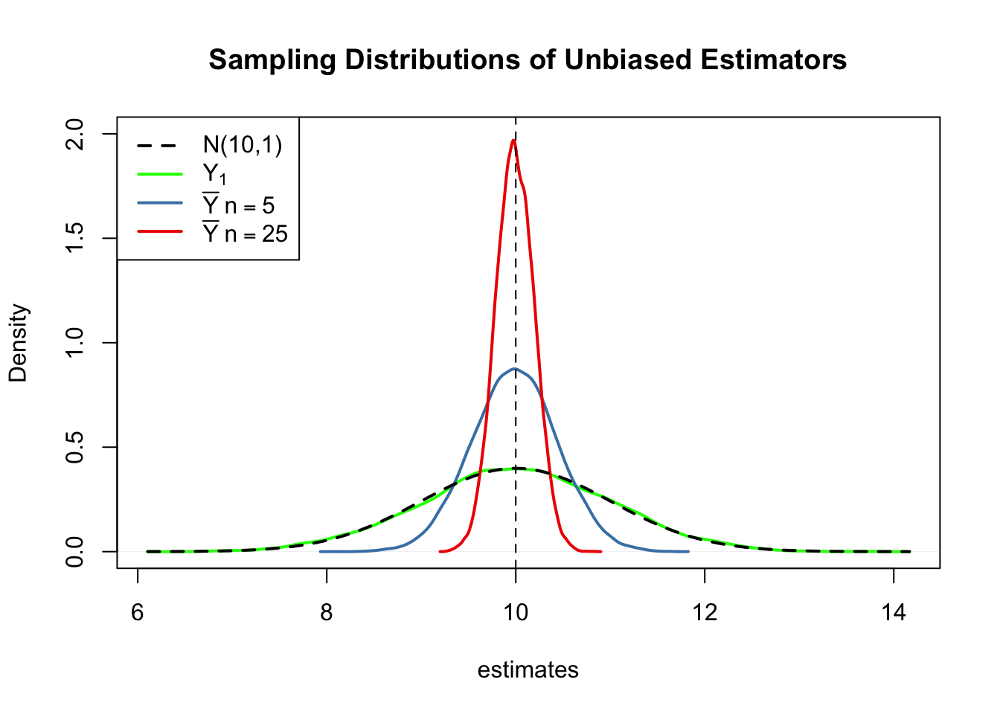
First, all sampling distributions (represented by the solid lines) are centered around \(\mu = 10\). This is evidence for the unbiasedness of \(Y_1\), \(\overline{Y}_{5}\) and \(\overline{Y}_{25}\). Of course, the theoretical density \(\mathcal{N}(10,1)\) is centered at \(10\), too.
Next, have a look at the spread of the sampling distributions. Several things are noteworthy:
The sampling distribution of \(Y_1\) (green curve) tracks the density of the \(\mathcal{N}(10,1)\) distribution (black dashed line) pretty closely. In fact, the sampling distribution of \(Y_1\) is the \(\mathcal{N}(10,1)\) distribution. This is less surprising if you keep in mind that the \(Y_1\) estimator does nothing but reporting an observation that is randomly selected from a population with \(\mathcal{N}(10,1)\) distribution. Hence, \(Y_1 \sim \mathcal{N}(10,1)\). Note that this result does not depend on the sample size \(n\): the sampling distribution of \(Y_1\) is always the population distribution, no matter how large the sample is. \(Y_1\) is a good a estimate of \(\mu_Y\), but we can do better.
Both sampling distributions of \(\overline{Y}\) show less dispersion than the sampling distribution of \(Y_1\). This means that \(\overline{Y}\) has a lower variance than \(Y_1\). In view of Key Concept 9, we find that \(\overline{Y}\) is a more efficient estimator than \(Y_1\). In fact, this holds for all \(n>1\).
\(\overline{Y}\) shows a behavior illustrating consistency (see Key Concept 9). The blue and the red densities are much more concentrated around \(\mu=10\) than the green one. As the number of observations is increased from \(1\) to \(5\), the sampling distribution tightens around the true parameter. Increasing the sample size to \(25\), this effect becomes more apparent. This implies that the probability of obtaining estimates that are close to the true value increases with \(n\).
Try out different values for the sample size and see how the sampling distribution of \(\overline{Y}\) changes!
\(\overline{Y}\) is the Least Squares Estimator of \(\mu_Y\)
Assume you have some observations \(Y_1,\dots,Y_n\) on \(Y \sim \mathcal{N}(10,1)\) (which is unknown) and would like to find an estimator \(m\) that predicts the observations as well as possible. By good we mean to choose \(m\) such that the total squared deviation between the predicted value and the observed values is small. Mathematically, this means we want to find an \(m\) that minimizes
\[\begin{equation} \sum_{i=1}^n (Y_i - m)^2. \end{equation}\]
Think of \(Y_i - m\) as the mistake made when predicting \(Y_i\) by \(m\). We could also minimize the sum of absolute deviations from \(m\) but minimizing the sum of squared deviations is mathematically more convenient (and will lead to a different result). That is why the estimator we are looking for is called the least squares estimator. \(m = \overline{Y}\), the sample mean, is this estimator.
We can show this by generating a random sample and plotting the above equation as a function of \(m\).
# define the function and vectorize it
sqm <- function(m) {
sum((y-m)^2)
}
sqm <- Vectorize(sqm)
# draw random sample and compute the mean
y <- rnorm(100, 10, 1)
mean(y)## [1] 10.1364# plot the objective function
curve(sqm(x),
from = -50,
to = 70,
xlab = "m",
ylab = "sqm(m)")
# add vertical line at mean(y)
abline(v = mean(y),
lty = 2,
col = "darkred")
# add annotation at mean(y)
text(x = mean(y),
y = 0,
labels = paste(round(mean(y), 2)))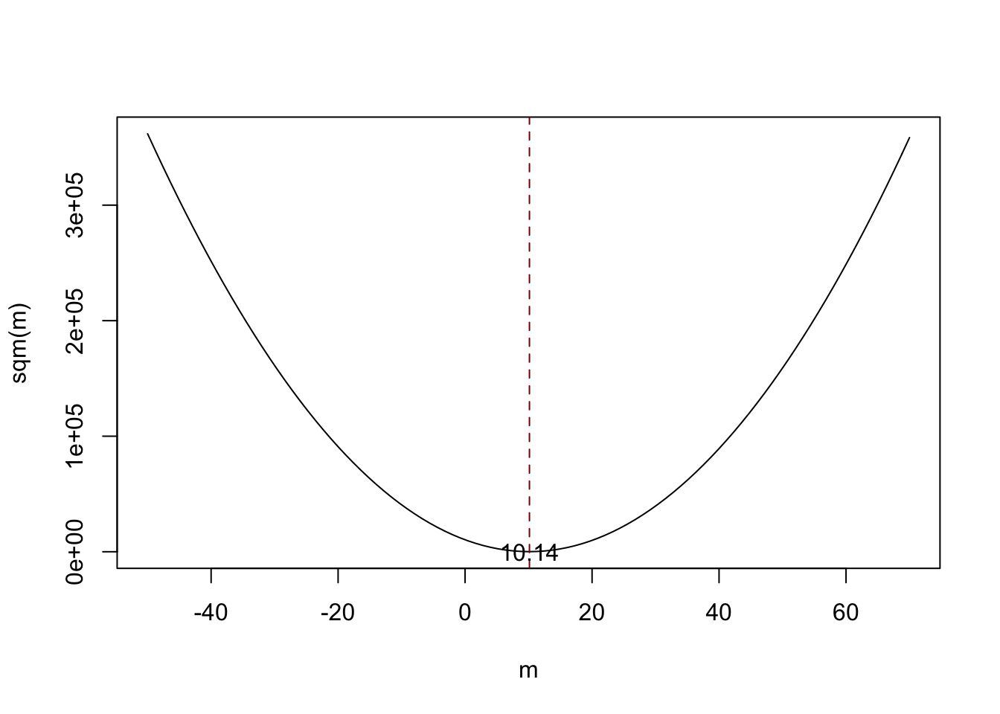
Notice that the equation above is a quadratic function so that there is only one minimum. The plot shows that this minimum lies exactly at the sample mean of the sample data.
Some R functions can only interact with functions that take a vector as an input and evaluate the function body on every entry of the vector, for example curve(). We call such functions vectorized functions and it is often a good idea to write vectorized functions yourself, although this is cumbersome in some cases. Having a vectorized function in R is never a drawback since these functions work on both single values and vectors.
Let us look at the function sqm(), which is non-vectorized:
sqm <- function(m) {
sum((y-m)^2) #body of the function
}
Providing, e.g., c(1,2,3) as the argument m would cause an error since then the operation y-m is invalid: the vectors y and m are of incompatible dimensions. This is why we cannot use sqm() in conjunction with curve().
Here Vectorize() comes into play. It generates a vectorized version of a non-vectorized function.
Why Random Sampling is Important
So far, we assumed (sometimes implicitly) that the observed data \(Y_1, \dots, Y_n\) are the result of a sampling process that satisfies the assumption of simple random sampling. This assumption often is fulfilled when estimating a population mean using \(\overline{Y}\). If this is not the case, estimates may be biased.
Let us fall back to pop, the fictive population of \(10000\) observations and compute the population mean \(\mu_{\texttt{pop}}\):
# compute the population mean of pop
mean(pop)## [1] 9.992604Next we sample \(10\) observations from pop with sample() and estimate \(\mu_{\texttt{pop}}\) using \(\overline{Y}\) repeatedly. However, now we use a sampling scheme that deviates from simple random sampling: instead of ensuring that each member of the population has the same chance to end up in a sample, we assign a higher probability of being sampled to the \(2500\) smallest observations of the population by setting the argument prop to a suitable vector of probability weights:
# simulate outcomes for the sample mean when the i.i.d. assumption fails
est3 <- replicate(n = 25000,
expr = mean(sample(x = sort(pop),
size = 10,
prob = c(rep(4, 2500), rep(1, 7500)))))
# compute the sample mean of the outcomes
mean(est3)## [1] 9.444113Next we plot the sampling distribution of \(\overline{Y}\) for this non-i.i.d. case and compare it to the sampling distribution when the i.i.d. assumption holds.
# sampling distribution of sample mean, i.i.d. holds, n=25
plot(density(est2),
col = 'steelblue',
lwd = 2,
xlim = c(8, 11),
xlab = 'Estimates',
main = 'When the i.i.d. Assumption Fails')
# sampling distribution of sample mean, i.i.d. fails, n=25
lines(density(est3),
col = 'red2',
lwd = 2)
# add a legend
legend("topleft",
legend = c(expression(bar(Y)[n == 25]~", i.i.d. fails"),
expression(bar(Y)[n == 25]~", i.i.d. holds")
),
lty = c(1, 1),
col = c('red2', 'steelblue'),
lwd = 2)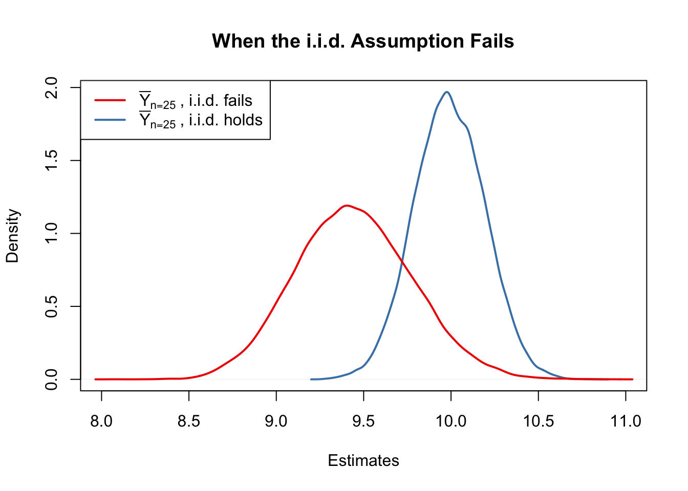
Here, the failure of the i.i.d. assumption implies that, on average, we underestimate \(\mu_Y\) using \(\overline{Y}\): the corresponding distribution of \(\overline{Y}\) is shifted to the left. In other words, \(\overline{Y}\) is a biased estimator for \(\mu_Y\) if the i.i.d. assumption does not hold.
1.3 Population Mean Hypothesis Test
In this section we briefly review concepts in hypothesis testing and discuss how to conduct hypothesis tests in R. We focus on drawing inferences about an unknown population mean.
Hypotheses and Hypothesis Testing
In a significance test, we want to exploit the information contained in a sample as evidence in favor or against a hypothesis. Essentially, hypotheses are simple questions that can be answered by ‘yes’ or ‘no’. In a hypothesis test we typically deal with two different hypotheses:
The null hypothesis, denoted \(H_0\), is the hypothesis we are interested in testing.
There must be an alternative hypothesis, denoted \(H_1\), the hypothesis that is thought to hold if the null hypothesis is rejected.
The null hypothesis that the population mean of \(Y\) equals the value \(\mu_{Y,0}\) is written as
\[ H_0: E(Y) = \mu_{Y,0}. \]
Often the alternative hypothesis chosen is the most general one,
\[ H_1: E(Y) \neq \mu_{Y,0}, \]
meaning that \(E(Y)\) may be anything but the value under the null hypothesis. This is called a two-sided alternative.
For the sake of brevity, we only consider two-sided alternatives in the subsequent sections of this chapter.
The p-Value
Assume that the null hypothesis is true. The \(p\)-value is the probability of drawing data and observing a corresponding test statistic that is at least as adverse to what is stated under the null hypothesis as the test statistic actually computed using the sample data.
In the context of the population mean and the sample mean, this definition can be stated mathematically in the following way:
\[\begin{equation} p \text{-value} = P_{H_0}\left[ \lvert \overline{Y} - \mu_{Y,0} \rvert > \lvert \overline{Y}^{act} - \mu_{Y,0} \rvert \right] \end{equation}\]
In the equation above, \(\overline{Y}^{act}\) is the mean of the sample actually computed. Consequently, in order to compute the \(p\)-value, knowledge about the sampling distribution of \(\overline{Y}\) when the null hypothesis is true is required. However in most cases the sampling distribution of \(\overline{Y}\) is unknown. Fortunately, as stated by the CLT (see Key Concept 7), the large-sample approximation \[ \overline{Y} \approx \mathcal{N}(\mu_{Y,0}, \, \sigma^2_{\overline{Y}}) \ \ , \ \ \sigma^2_{\overline{Y}} = \frac{\sigma_Y^2}{n} \]
can be made under the null. Thus,
\[ \frac{\overline{Y} - \mu_{Y,0}}{\sigma_Y/\sqrt{n}} \sim \mathcal{N}(0,1). \]
So in large samples, the \(p\)-value can be computed without knowledge of the exact sampling distribution of \(\overline{Y}\).
p-Values with Known SD
For now, let us assume that \(\sigma_{\overline{Y}}\) is known. Then, we can rewrite the equation above as
\[\begin{align} p \text{-value} =& \, P_{H_0}\left[ \left\lvert \frac{\overline{Y} - \mu_{Y,0}}{\sigma_{\overline{Y}}} \right\rvert > \left\lvert \frac{\overline{Y}^{act} - \mu_{Y,0}}{\sigma_{\overline{Y}}} \right\rvert \right] \\ =& \, 2 \cdot \Phi \left[ - \left\lvert \frac{\overline{Y}^{act} - \mu_{Y,0}}{\sigma_{\overline{Y}}} \right\rvert\right]. \end{align}\]
The \(p\)-value can be seen as the area in the tails of the \(\mathcal{N}(0,1)\) distribution that lies beyond
\[\begin{equation} \pm \left\lvert \frac{\overline{Y}^{act} - \mu_{Y,0}}{\sigma_{\overline{Y}}} \right\rvert \end{equation}\]
We now use R to visualize what is stated in the last two equations:
# plot the standard normal density on the interval [-4,4]
curve(dnorm(x),
xlim = c(-4, 4),
main = 'Calculating a p-Value',
yaxs = 'i',
xlab = 'z',
ylab = '',
lwd = 2,
axes = 'F')
# add x-axis
axis(1,
at = c(-1.5, 0, 1.5),
padj = 0.75,
labels = c(expression(-frac(bar(Y)^"act"~-~bar(mu)[Y,0], sigma[bar(Y)])),
0,
expression(frac(bar(Y)^"act"~-~bar(mu)[Y,0], sigma[bar(Y)]))))
# shade p-value/2 region in left tail
polygon(x = c(-6, seq(-6, -1.5, 0.01), -1.5),
y = c(0, dnorm(seq(-6, -1.5, 0.01)),0),
col = 'steelblue')
# shade p-value/2 region in right tail
polygon(x = c(1.5, seq(1.5, 6, 0.01), 6),
y = c(0, dnorm(seq(1.5, 6, 0.01)), 0),
col = 'steelblue')
Sample Variance
If \(\sigma^2_Y\) is unknown, it must be estimated. This can be done using the sample variance
\[\begin{equation} s_Y^2 = \frac{1}{n-1} \sum_{i=1}^n (Y_i - \overline{Y})^2. \end{equation}\]
Furthermore
\[\begin{equation} s_Y = \sqrt{\frac{1}{n-1} \sum_{i=1}^n (Y_i - \overline{Y})^2} \end{equation}\]
is a suitable estimator for the standard deviation of \(Y\). In R, \(s_Y\) is implemented in the function sd(), see ?sd.
Using R we can illustrate that \(s_Y\) is a consistent estimator for \(\sigma_Y\) with
\[ s_Y \overset{p}{\longrightarrow} \sigma_Y. \]
The idea here is to generate a large number of samples \(Y_1,\dots,Y_n\) where, \(Y\sim \mathcal{N}(10,10)\) say, estimate \(\sigma_Y\) using \(s_Y\) and investigate how the distribution of \(s_Y\) changes as \(n\) gets larger.
# vector of sample sizes
n <- c(10000, 5000, 2000, 1000, 500)
# sample observations, estimate using 'sd()' and plot the estimated distributions
sq_y <- replicate(n = 10000, expr = sd(rnorm(n[1], 10, 10)))
plot(density(sq_y),
main = expression('Sampling Distributions of' ~ s[Y]),
xlab = expression(s[y]),
lwd = 2)
for (i in 2:length(n)) {
sq_y <- replicate(n = 10000, expr = sd(rnorm(n[i], 10, 10)))
lines(density(sq_y),
col = i,
lwd = 2)
}
# add a legend
legend("topleft",
legend = c(expression(n == 10000),
expression(n == 5000),
expression(n == 2000),
expression(n == 1000),
expression(n == 500)),
col = 1:5,
lwd = 2)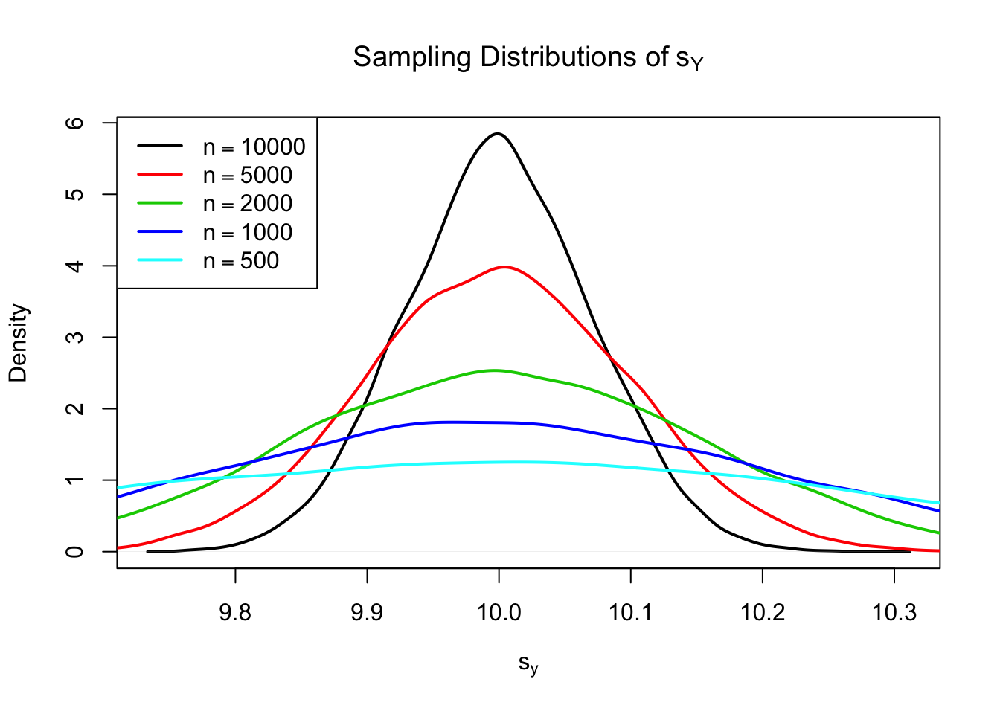
The plot shows that the distribution of \(s_Y\) tightens around the true value \(\sigma_Y = 10\) as \(n\) increases.
The function that estimates the standard deviation of an estimator is called the standard error of the estimator. Key Concept 10 summarizes the terminology in the context of the sample mean.
Key Concept 10
The Standard Error of \(\overline{Y}\)
Take an i.i.d. sample \(Y_1, \dots, Y_n\). The mean of \(Y\) is consistently estimated by \(\overline{Y}\), the sample mean of the \(Y_i\). Since \(\overline{Y}\) is a random variable, it has a sampling distribution with variance \(\frac{\sigma_Y^2}{n}\). The standard error of \(\overline{Y}\), denoted \(SE(\overline{Y})\) is an estimator of the standard deviation of \(\overline{Y}\): \[ SE(\overline{Y}) = \hat\sigma_{\overline{Y}} = \frac{s_Y}{\sqrt{n}} \] The caret (^) over \(\sigma\) indicates that \(\hat\sigma_{\overline{Y}}\) is an estimator for \(\sigma_{\overline{Y}}\).
As an example to underpin Key Concept 10, consider a sample of \(n=100\) i.i.d. observations of the Bernoulli distributed variable \(Y\) with success probability \(p=0.1\). Thus \(E(Y)=p=0.1\) and \(\text{Var}(Y)=p(1-p)\). \(E(Y)\) can be estimated by \(\overline{Y}\), which then has variance
\[ \sigma^2_{\overline{Y}} = p(1-p)/n = 0.0009 \]
and standard deviation
\[ \sigma_{\overline{Y}} = \sqrt{p(1-p)/n} = 0.03. \]
In this case the standard error of \(\overline{Y}\) can be estimated by
\[ SE(\overline{Y}) = \sqrt{\overline{Y}(1-\overline{Y})/n}. \]
Let us check whether \(\overline{Y}\) and \(SE(\overline{Y})\) estimate the respective true values, on average.
# draw 10000 samples of size 100 and estimate the mean of Y and
# estimate the standard error of the sample mean
mean_estimates <- numeric(10000)
se_estimates <- numeric(10000)
for (i in 1:10000) {
s <- sample(0:1,
size = 100,
prob = c(0.9, 0.1),
replace = T)
mean_estimates[i] <- mean(s)
se_estimates[i] <- sqrt(mean(s) * (1 - mean(s)) / 100)
}
mean(mean_estimates)## [1] 0.10047mean(se_estimates)## [1] 0.02961587Both estimators seem to be unbiased for the true parameters. In fact, this is true for the sample mean, but not for \(SE(\overline{Y})\). However, both estimators are consistent for the true parameters.
p-value with Unknown SD
When \(\sigma_Y\) is unknown, the \(p\)-value for a hypothesis test concerning \(\mu_Y\) using \(\overline{Y}\) can be computed by replacing \(\sigma_{\overline{Y}}\) by the standard error \(SE(\overline{Y}) = \hat\sigma_{\overline{Y}}\). Then,
\[ p\text{-value} = 2\cdot\Phi\left(-\left\lvert \frac{\overline{Y}^{act}-\mu_{Y,0}}{SE(\overline{Y})} \right\rvert \right). \]
This is easily done in R:
# sample and estimate, compute standard error
samplemean_act <- mean(
sample(0:1,
prob = c(0.9, 0.1),
replace = T,
size = 100))
SE_samplemean <- sqrt(samplemean_act * (1 - samplemean_act) / 100)
# null hypothesis
mean_h0 <- 0.1
# compute the p-value
pvalue <- 2 * pnorm(- abs(samplemean_act - mean_h0) / SE_samplemean)
pvalue## [1] 0.7492705Later, we will encounter more convenient approaches to obtain \(t\)-statistics and \(p\)-values using R.
The t-statistic
In hypothesis testing, the standardized sample average
\[\begin{equation} t = \frac{\overline{Y} - \mu_{Y,0}}{SE(\overline{Y})} \end{equation}\]
is called a \(t\)-statistic. This \(t\)-statistic plays an important role in testing hypotheses about \(\mu_Y\). It is a prominent example of a test statistic.
Implicitly, we already have computed a \(t\)-statistic for \(\overline{Y}\) in the previous code chunk.
# compute a t-statistic for the sample mean
tstatistic <- (samplemean_act - mean_h0) / SE_samplemean
tstatistic## [1] 0.3196014Using R we can illustrate that if \(\mu_{Y,0}\) equals the true value, that is, if the null hypothesis is true, the \(t\)-statistic equation is approximately \(\mathcal{N}(0,1)\) distributed when \(n\) is large.
# prepare empty vector for t-statistics
tstatistics <- numeric(10000)
# set sample size
n <- 300
# simulate 10000 t-statistics
for (i in 1:10000) {
s <- sample(0:1,
size = n,
prob = c(0.9, 0.1),
replace = T)
tstatistics[i] <- (mean(s)-0.1)/sqrt(var(s)/n)
}In the simulation above, we estimate the variance of the \(Y_i\) using var(s). This is more general then mean(s)*(1-mean(s)) since the latter requires that the data are Bernoulli distributed and that we know this.
# plot density and compare to N(0,1) density
plot(density(tstatistics),
xlab = 't-statistic',
main = 'Estimated Distribution of the t-statistic when n=300',
lwd = 2,
xlim = c(-4, 4),
col = 'steelblue')
# N(0,1) density (dashed)
curve(dnorm(x),
add = T,
lty = 2,
lwd = 2)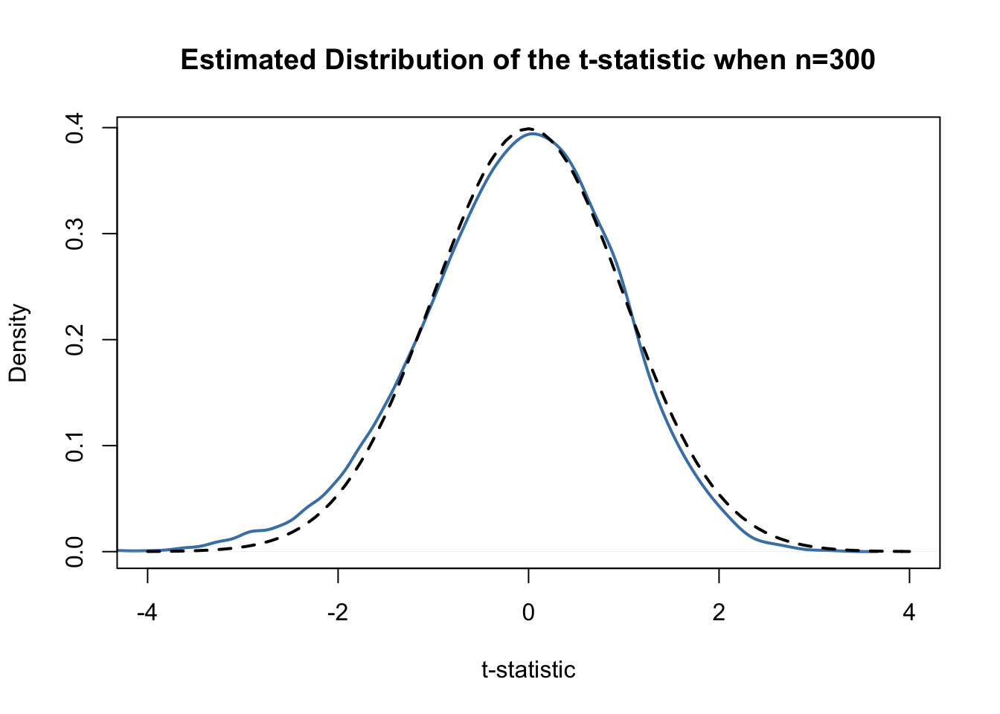
Judging from the plot, the normal approximation works reasonably well for the chosen sample size. This normal approximation has already been used in the definition of the \(p\)-value, above.
Hypothesis Testing
Key Concept 11
Hypothesis Testing Terminology
In hypothesis testing, two types of mistakes are possible: 1. The null hypothesis is rejected although it is true (type-I-error)
2. The null hypothesis is not rejected although it is false (type-II-error) The significance level of the test is the probability to commit a type-I-error we are willing to accept in advance. E.g., using a prespecified significance level of \(0.05\), we reject the null hypothesis if and only if the \(p\)-value is less than \(0.05\). The significance level is chosen before the test is conducted. An equivalent procedure is to reject the null hypothesis if the observed test statistic is, in absolute value terms, larger than the critical value of the test statistic. The critical value is determined by the significance level chosen and defines two disjoint sets of values which are called acceptance region and rejection region. The acceptance region contains all values of the test statistic for which the test does not reject while the rejection region contains all the values for which the test does reject. The \(p\)-value is the probability that, in repeated sampling under the same conditions a test statistic is observed that provides just as much evidence against the null hypothesis as the test statistic actually observed. The actual probability that the test rejects the true null hypothesis is called the size of the test. In an ideal setting, the size does equals the significance level. The probability that the test correctly rejects a false null hypothesis is called power.
Reconsider the pvalue computed further above:
# check whether p-value < 0.05
pvalue < 0.05## [1] FALSEThe condition is not fulfilled so we do not reject the null hypothesis correctly.
When working with a \(t\)-statistic instead, it is equivalent to apply the following rule:
\[ \text{Reject } H_0 \text{ if } \lvert t^{act} \rvert > 1.96 \]
We reject the null hypothesis at the significance level of \(5\%\) if the computed \(t\)-statistic lies beyond the critical value of 1.96 in absolute value terms. \(1.96\) is the \(0.975\)-quantile of the standard normal distribution.
# check the critical value
qnorm(p = 0.975)## [1] 1.959964# check whether the null is rejected using the t-statistic computed further above
abs(tstatistic) > 1.96## [1] FALSEJust like using the \(p\)-value, we cannot reject the null hypothesis using the corresponding \(t\)-statistic. Key Concept 12 summarizes the procedure of performing a two-sided hypothesis test about the population mean \(E(Y)\).
Key Concept 12
Testing Against the Alternative
- Estimate \(\mu_{Y}\) using \(\overline{Y}\) and compute the \(SE(\overline{Y})\), standard error of \(\overline{Y}\).
- Compute the \(t\)-statistic.
- Compute the \(p\)-value and reject the null hypothesis at the \(5\%\) level of significance if the \(p\)-value is smaller than \(0.05\) or, equivalently, if \[ \left\lvert t^{act} \right\rvert > 1.96. \]
One-sided Alternatives
Sometimes we are interested in testing if the mean is bigger or smaller than some value hypothesized under the null. If we anticipate that such a differential exists, a relevant alternative (to the null hypothesis that there is differential) is that the observed values for a group, \(\mu_Y\) is bigger than \(\mu_{Y,0}\), the average for another group, which we assume to be known here for simplicity.
This is an example of a right-sided test and the hypotheses pair is chosen to be
\[ H_0: \mu_Y = \mu_{Y,0} \ \ \text{vs} \ \ H_1: \mu_Y > \mu_{Y,0}. \]
We reject the null hypothesis if the computed test-statistic is larger than the critical value \(1.64\), the \(0.95\)-quantile of the \(\mathcal{N}(0,1)\) distribution. This ensures that \(1-0.95=5\%\) probability mass remains in the area to the right of the critical value. As before, we can visualize this in R using the function polygon().
# plot the standard normal density on the domain [-4,4]
curve(dnorm(x),
xlim = c(-4, 4),
main = 'Rejection Region of a Right-Sided Test',
yaxs = 'i',
xlab = 't-statistic',
ylab = '',
lwd = 2,
axes = 'F')
# add the x-axis
axis(1,
at = c(-4, 0, 1.64, 4),
padj = 0.5,
labels = c('', 0, expression(Phi^-1~(.95)==1.64), ''))
# shade the rejection region in the left tail
polygon(x = c(1.64, seq(1.64, 4, 0.01), 4),
y = c(0, dnorm(seq(1.64, 4, 0.01)), 0),
col = 'darkred')
Analogously, for the left-sided test we have \[H_0: \mu_Y = \mu_{Y,0} \ \ \text{vs.} \ \ H_1: \mu_Y < \mu_{Y,0}.\] The null is rejected if the observed test statistic falls short of the critical value which, for a test at the \(0.05\) level of significance, is given by \(-1.64\), the \(0.05\)-quantile of the \(\mathcal{N}(0,1)\) distribution. \(5\%\) probability mass lies to the left of the critical value.
It is straightforward to adapt the code chunk above to the case of a left-sided test. We only have to adjust the color shading and the tick marks.
# plot the the standard normal density on the domain [-4,4]
curve(dnorm(x),
xlim = c(-4, 4),
main = 'Rejection Region of a Left-Sided Test',
yaxs = 'i',
xlab = 't-statistic',
ylab = '',
lwd = 2,
axes = 'F')
# add x-axis
axis(1,
at = c(-4, 0, -1.64, 4),
padj = 0.5,
labels = c('', 0, expression(Phi^-1~(.05)==-1.64), ''))
# shade rejection region in right tail
polygon(x = c(-4, seq(-4, -1.64, 0.01), -1.64),
y = c(0, dnorm(seq(-4, -1.64, 0.01)), 0),
col = 'darkred')
1.4 Population Mean Confidence Interval
As stressed before, we will never estimate the exact value of the population mean of \(Y\) using a random sample. However, we can compute confidence intervals for the population mean. In general, a confidence interval for an unknown parameter is a recipe that, in repeated samples, yields intervals that contain the true parameter with a prespecified probability, the confidence level. Confidence intervals are computed using the information available in the sample. Since this information is the result of a random process, confidence intervals are random variables themselves.
Key Concept 13 shows how to compute confidence intervals for the unknown population mean \(E(Y)\).
Key Concept 13
Mean Confidence Interval
A \(95\%\) confidence interval for \(\mu_Y\) is a random variable that contains the true \(\mu_Y\) in \(95\%\) of all possible random samples. When \(n\) is large we can use the normal approximation. Then, \(99\%\), \(95\%\), \(90\%\) confidence intervals are \[\begin{align} &99\%\text{ confidence interval for } \mu_Y = \left[ \overline{Y} \pm 2.58 \times SE(\overline{Y}) \right], \\ &95\%\text{ confidence interval for } \mu_Y = \left[\overline{Y} \pm 1.96 \times SE(\overline{Y}) \right], \\ &90\%\text{ confidence interval for } \mu_Y = \left[ \overline{Y} \pm 1.64 \times SE(\overline{Y}) \right]. \end{align}\] These confidence intervals are sets of null hypotheses we cannot reject in a two-sided hypothesis test at the given level of confidence. Now consider the following statements. 1. In repeated sampling, the interval \[ \left[ \overline{Y} \pm 1.96 \times SE(\overline{Y}) \right] \] covers the true value of \(\mu_Y\) with a probability of \(95\%\). 2. We have computed \(\overline{Y} = 5.1\) and \(SE(\overline{Y})=2.5\) so the interval \[ \left[ 5.1 \pm 1.96 \times 2.5 \right] = \left[0.2,10\right] \] covers the true value of \(\mu_Y\) with a probability of \(95\%\). While 1. is right (this is in line with the definition above), 2. is wrong and I would never want to read such a sentence. The difference is that, while 1. is the definition of a random variable, 2. is one possible outcome of this random variable so there is no meaning in making any probabilistic statement about it. Either the computed interval does cover \(\mu_Y\) or it does not!
In R, testing of hypotheses about the mean of a population on the basis of a random sample is very easy due to functions like t.test() from the stats package. It produces an object of type list. Luckily, one of the most simple ways to use t.test() is when you want to obtain a \(95\%\) confidence interval for some population mean. We start by generating some random data and calling t.test() in conjunction with ls() to obtain a breakdown of the output components.
# set seed
set.seed(1)
# generate some sample data
sampledata <- rnorm(100, 10, 10)
# check the type of the outcome produced by t.test
typeof(t.test(sampledata))## [1] "list"# display the list elements produced by t.test
ls(t.test(sampledata))## [1] "alternative" "conf.int" "data.name" "estimate" "method"
## [6] "null.value" "p.value" "parameter" "statistic" "stderr"Though we find that many items are reported, at the moment we are only interested in computing a \(95\%\) confidence set for the mean.
t.test(sampledata)$"conf.int"## [1] 9.306651 12.871096
## attr(,"conf.level")
## [1] 0.95This tells us that the \(95\%\) confidence interval is
\[ \left[9.31, 12.87\right]. \]
In this example, the computed interval obviously does cover the true \(\mu_Y\) which we know to be \(10\).
Let us have a look at the whole standard output produced by t.test().
t.test(sampledata)##
## One Sample t-test
##
## data: sampledata
## t = 12.346, df = 99, p-value < 2.2e-16
## alternative hypothesis: true mean is not equal to 0
## 95 percent confidence interval:
## 9.306651 12.871096
## sample estimates:
## mean of x
## 11.08887We see that t.test() does not only compute a \(95\%\) confidence interval but automatically conducts a two-sided significance test of the hypothesis \(H_0: \mu_Y = 0\) at the level of \(5\%\) and reports relevant parameters thereof: the alternative hypothesis, the estimated mean, the resulting \(t\)-statistic, the degrees of freedom of the underlying \(t\) distribution (t.test() does use perform the normal approximation) and the corresponding \(p\)-value. This is very convenient!
In this example, we come to the conclusion that the population mean is significantly different from \(0\) (which is correct) at the level of \(5\%\), since \(\mu_Y = 0\) is not an element of the \(95\%\) confidence interval
\[ 0 \in \left[9.31,12.87\right]. \] We come to an equivalent result when using the \(p\)-value rejection rule since
\[ p\text{-value} = 2.2\cdot 10^{-16} \ll 0.05. \]
1.5 Comparing Population Means
Suppose you are interested in the means of two different populations, denote them \(\mu_1\) and \(\mu_2\). More specifically, you are interested whether these population means are different from each other and plan to use a hypothesis test to verify this on the basis of independent sample data from both populations. A suitable pair of hypotheses is
\[\begin{equation} H_0: \mu_1 - \mu_2 = d_0 \ \ \text{vs.} \ \ H_1: \mu_1 - \mu_2 \neq d_0 \end{equation}\]
where \(d_0\) denotes the hypothesized difference in means (so \(d_0=0\) when the means are equal, under the null hypothesis). \(H_0\) can be tested with the \(t\)-statistic
\[\begin{equation} t=\frac{(\overline{Y}_1 - \overline{Y}_2) - d_0}{SE(\overline{Y}_1 - \overline{Y}_2)} \end{equation}\]
where
\[\begin{equation} SE(\overline{Y}_1 - \overline{Y}_2) = \sqrt{\frac{s_1^2}{n_1} + \frac{s_2^2}{n_2}}. \end{equation}\]
This is called a two sample \(t\)-test. For large \(n_1\) and \(n_2\), this is standard normal under the null hypothesis. Analogously to the simple \(t\)-test we can compute confidence intervals for the true difference in population means:
\[ (\overline{Y}_1 - \overline{Y}_2) \pm 1.96 \times SE(\overline{Y}_1 - \overline{Y}_2) \]
is a \(95\%\) confidence interval for \(d\).
In R, hypotheses can be tested with t.test(), too. Note that t.test() chooses \(d_0 = 0\) by default. This can be changed by setting the argument mu accordingly.
The subsequent code chunk demonstrates how to perform a two sample \(t\)-test in R using simulated data.
# set random seed
set.seed(1)
# draw data from two different populations with equal mean
sample_pop1 <- rnorm(100, 10, 10)
sample_pop2 <- rnorm(100, 10, 20)
# perform a two sample t-test
t.test(sample_pop1, sample_pop2)##
## Welch Two Sample t-test
##
## data: sample_pop1 and sample_pop2
## t = 0.872, df = 140.52, p-value = 0.3847
## alternative hypothesis: true difference in means is not equal to 0
## 95 percent confidence interval:
## -2.338012 6.028083
## sample estimates:
## mean of x mean of y
## 11.088874 9.243838We find that the two sample \(t\)-test does not reject the (true) null hypothesis that \(d_0 = 0\).
1.6 Scatterplots and Sample Covariance
A scatter plot represents two dimensional data, for example \(n\) observation on \(X_i\) and \(Y_i\), by points in a coordinate system. It is very easy to generate scatter plots using the plot() function in R. Let us generate some artificial data and plot it.
# set random seed
set.seed(123)
# generate dataset
X <- runif(n = 100,
min = 18,
max = 70)
Y <- X + rnorm(n=100, 50, 15)
# plot observations
plot(X,
Y,
type = "p",
main = "A Scatterplot of X and Y",
xlab = "X",
ylab = "Y",
col = "steelblue",
pch = 19)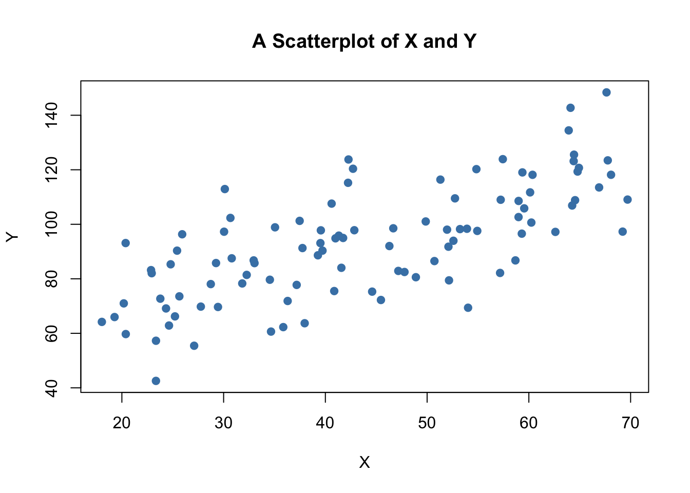
The plot shows positive correlation between \(X\) and \(Y\).
Sample Covariance and Correlation
By now you should be familiar with the concepts of variance and covariance. Just like the variance, covariance and correlation of two variables are properties that relate to the (unknown) joint probability distribution of these variables. We can estimate covariance and correlation by means of suitable estimators using a sample \((X_i,Y_i)\), \(i=1,\dots,n\).
The sample covariance
\[ s_{XY} = \frac{1}{n-1} \sum_{i=1}^n (X_i - \overline{X})(Y_i - \overline{Y}) \]
is an estimator for the population variance of \(X\) and \(Y\) whereas the sample correlation
\[ r_{XY} = \frac{s_{XY}}{s_Xs_Y} \] can be used to estimate the population correlation, a standardized measure for the strength of the linear relationship between \(X\) and \(Y\).
As for variance and standard deviation, these estimators are implemented as R functions in the stats package. We can use them to estimate population covariance and population correlation of the artificial data on age and earnings.
# compute sample covariance of X and Y
cov(X, Y)## [1] 213.934# compute sample correlation between X and Y
cor(X, Y)## [1] 0.706372# an equivalent way to compute the sample correlation
cov(X, Y) / (sd(X) * sd(Y))## [1] 0.706372The estimates indicate that \(X\) and \(Y\) are moderately correlated.
The next code chunk uses the function mvnorm() from package MASS [@R-MASS] to generate bivariate sample data with different degrees of correlation.
library(MASS)
# set random seed
set.seed(1)
# positive correlation (0.81)
example1 <- mvrnorm(100,
mu = c(0, 0),
Sigma = matrix(c(2, 2, 2, 3), ncol = 2),
empirical = TRUE)
# negative correlation (-0.81)
example2 <- mvrnorm(100,
mu = c(0, 0),
Sigma = matrix(c(2, -2, -2, 3), ncol = 2),
empirical = TRUE)
# no correlation
example3 <- mvrnorm(100,
mu = c(0, 0),
Sigma = matrix(c(1, 0, 0, 1), ncol = 2),
empirical = TRUE)
# no correlation (quadratic relationship)
X <- seq(-3, 3, 0.01)
Y <- - X^2 + rnorm(length(X))
example4 <- cbind(X, Y)
# divide plot area as 2-by-2 array
par(mfrow = c(2, 2))
# plot datasets
plot(example1, col = 'steelblue', pch = 20, xlab = 'X', ylab = 'Y',
main = "Correlation = 0.81")
plot(example2, col = 'steelblue', pch = 20, xlab = 'X', ylab = 'Y',
main = "Correlation = -0.81")
plot(example3, col = 'steelblue', pch = 20, xlab = 'X', ylab = 'Y',
main = "Correlation = 0")
plot(example4, col = 'steelblue', pch = 20, xlab = 'X', ylab = 'Y',
main = "Correlation = 0")
1.7 Simple Linear Regression
To start with an easy example, consider the following combinations of average patient satisfaction score and the average patient-doctor ratio in some fictional hospitals.
To work with these data in R we begin by generating two vectors: one for the patient-doctor ratios (PDR) and one for the patient scores (Score), both containing the data from the table above.
# Create sample data
PDR <- c(15, 17, 19, 20, 22, 23.5, 25)
Score <- c(680, 640, 670, 660, 630, 660, 635)
# Print out sample data
PDR## [1] 15.0 17.0 19.0 20.0 22.0 23.5 25.0Score## [1] 680 640 670 660 630 660 635To build a simple linear regression model, we hypothesise that the relationship between dependent and independent variables is linear, formally \[ Y = b \cdot X + a. \] For now, let us suppose that the function which relates patient score and patient-doctor ratio to each other is \[Score = 713 - 3 \times PDR.\]
It is always a good idea to visualize the data you work with. Here, it is suitable to use plot() to produce a scatterplot with PDR on the \(x\)-axis and Score on the \(y\)-axis. Just call plot(y_variable ~ x_variable) whereby y_variable and x_variable are placeholders for the vectors of observations we want to plot. Furthermore, we might want to add a systematic relationship to the plot. To draw a straight line, R provides the function abline(). We just have to call this function with arguments a (representing the intercept) and b (representing the slope) after executing plot() in order to add the line to our plot.
# create a scatterplot of the data
plot(Score ~ PDR)
# add the systematic relationship to the plot
abline(a = 713, b = -3)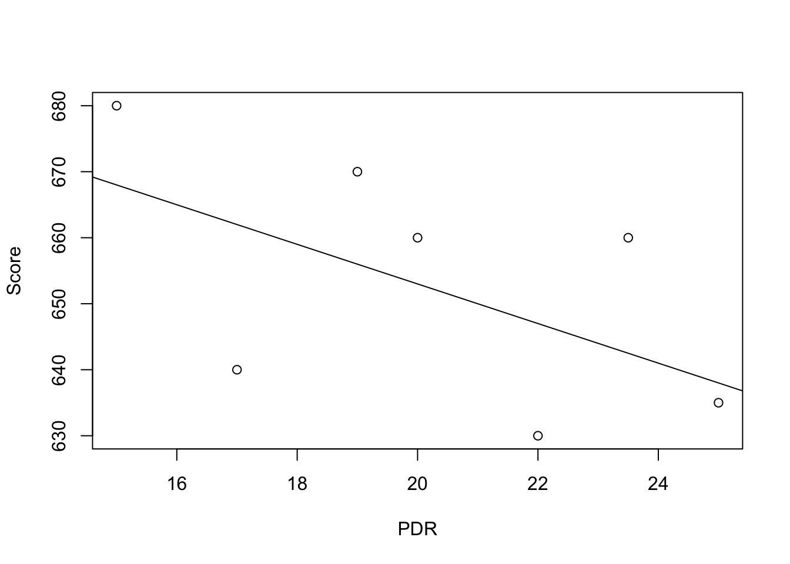
We find that the line does not touch any of the points although we claimed that it represents the systematic relationship. The reason for this is randomness. Most of the time there are additional influences which imply that there is no bivariate relationship between the two variables.
In order to account for these differences between observed data and the systematic relationship, we extend our model from above by an error term \(u\) which captures additional random effects. Put differently, \(u\) accounts for all the differences between the regression line and the actual observed data. Beside pure randomness, these deviations could also arise from measurement errors or, as will be discussed later, could be the consequence of leaving out other factors that are relevant in explaining the dependent variable.
Which other factors are plausible in our example? For one thing, the patient scores might be driven by the doctors’ quality and/or the health of the patients prior to entering the hospital. It is also possible that in some hospitals, the patients were lucky and thus gave higher scores. For now, we will summarize such influences by an additive component:
\[ Score = \beta_0 + \beta_1 \times PDR + \text{other factors} \]
Of course this idea is very general as it can be easily extended to other situations that can be described with a linear model. The basic linear regression model we will work with hence is
\[ Y_i = \beta_0 + \beta_1 X_i + u_i. \]
Key Concept 14 summarizes the terminology of the simple linear regression model.
Key Concept 14
Linear Regression Model
The linear regression model is \[Y_i = \beta_0 + \beta_1 X_i + u_i\] where - the index \(i\) runs over the observations, \(i=1,\dots,n\) - \(Y_i\) is the dependent variable, the regressand, or simply the left-hand variable - \(X_i\) is the independent variable, the regressor, or simply the right-hand variable - \(Y = \beta_0 + \beta_1 X\) is the population regression line also called the population regression function - \(\beta_0\) is the intercept of the population regression line - \(\beta_1\) is the slope of the population regression line - \(u_i\) is the error term.
1.8 Estimating the Coefficients
In practice, the intercept \(\beta_0\) and slope \(\beta_1\) of the population regression line are unknown. Therefore, we must employ data to estimate both unknown parameters. In the following, we will use a dataset to demonstrate how this is achieved. We want to relate patient scores to patient-doctor ratios measured in regional hospitals. The patient score is the average of their health and satisfaction scores. Again, we use the number of patients divided by the number of doctors (the patient-doctor ratio). The data set can be loaded using the function read.table() and can be downloaded from the course Moodle page.
## # load the the data set in the workspace
## data <- read.table("hospitals.txt",header=TRUE)With help of head() we get a first overview of our data. This function shows only the first 6 rows of the data set which prevents an overcrowded console output.
head(data)##
## 1 function (..., list = character(), package = NULL, lib.loc = NULL,
## 2 verbose = getOption("verbose"), envir = .GlobalEnv, overwrite = TRUE)
## 3 {
## 4 fileExt <- function(x) {
## 5 db <- grepl("\\\\.[^.]+\\\\.(gz|bz2|xz)$", x)
## 6 ans <- sub(".*\\\\.", "", x)We find that the data set consists of plenty of variables and that most of them are numeric.
The two variables we are interested in (i.e., average patient score and the patient-doctor ratio) are not included. However, it is possible to calculate both from the provided data. To obtain the patient-doctor ratio, we simply divide the number of patients by the number of doctors (average on call number). The average patient score is the arithmetic mean of the score for satisfaction and the score of patient health after their hospital discharge. The next code chunk shows how the two variables can be constructed as vectors and how they are appended to data.
data <- read.table("hospitals.txt", header=TRUE)
# compute STR and append it to CASchools
data$PDR <- data$patients/data$doctors
# compute TestScore and append it to CASchools
data$score <- (data$outpatient_1 + data$outpatient_2)/2 If we ran head(data) again we would find the two variables of interest as additional columns named PDR and score (check this!).
There are several functions which can be used to summarize the distribution of patient scores and patient-doctor ratios, e.g.,
mean() (computes the arithmetic mean of the provided numbers),
sd() (computes the sample standard deviation),
quantile() (returns a vector of the specified sample quantiles for the data).
The next code chunk shows how to achieve this. First, we compute summary statistics on the columns PDR and score of data. In order to get nice output we gather the measures in a data.frame named DistributionSummary.
# compute sample averages of STR and score
avg_PDR <- mean(data$PDR)
avg_score <- mean(data$score)
# compute sample standard deviations of STR and score
sd_PDR <- sd(data$PDR)
sd_score <- sd(data$score)
# set up a vector of percentiles and compute the quantiles
quantiles <- c(0.10, 0.25, 0.4, 0.5, 0.6, 0.75, 0.9)
quant_PDR <- quantile(data$PDR, quantiles)
quant_score <- quantile(data$score, quantiles)
# gather everything in a data.frame
DistributionSummary <- data.frame(Average = c(avg_PDR, avg_score),
StandardDeviation = c(sd_PDR, sd_score),
quantile = rbind(quant_PDR, quant_score))
# print the summary to the console
DistributionSummary## Average StandardDeviation quantile.10. quantile.25.
## quant_PDR 19.64043 1.891812 17.3486 18.58236
## quant_score 654.15655 19.053347 630.3950 640.05000
## quantile.40. quantile.50. quantile.60. quantile.75.
## quant_PDR 19.26618 19.72321 20.0783 20.87181
## quant_score 649.06999 654.45000 659.4000 666.66249
## quantile.90.
## quant_PDR 21.86741
## quant_score 678.85999As for the sample data, we will use plot(). This allows us to detect characteristics of our data, such as outliers which are harder to discover by looking at mere numbers. This time we add some additional arguments to the call of plot().
The first argument in our call of plot(), score ~ PDR, is again a formula that states variables on the y- and the x-axis. However, this time the two variables are not saved in separate vectors but are columns of data. Therefore, R would not find them without the argument data being correctly specified. data must be in accordance with the name of the data.frame to which the variables belong to, in this case data. Further arguments are used to change the appearance of the plot: while main adds a title, xlab and ylab add custom labels to both axes.
plot(score ~ PDR,
data = data,
main = "Scatterplot of Score and PDR",
xlab = "PDR (X)",
ylab = "Score (Y)")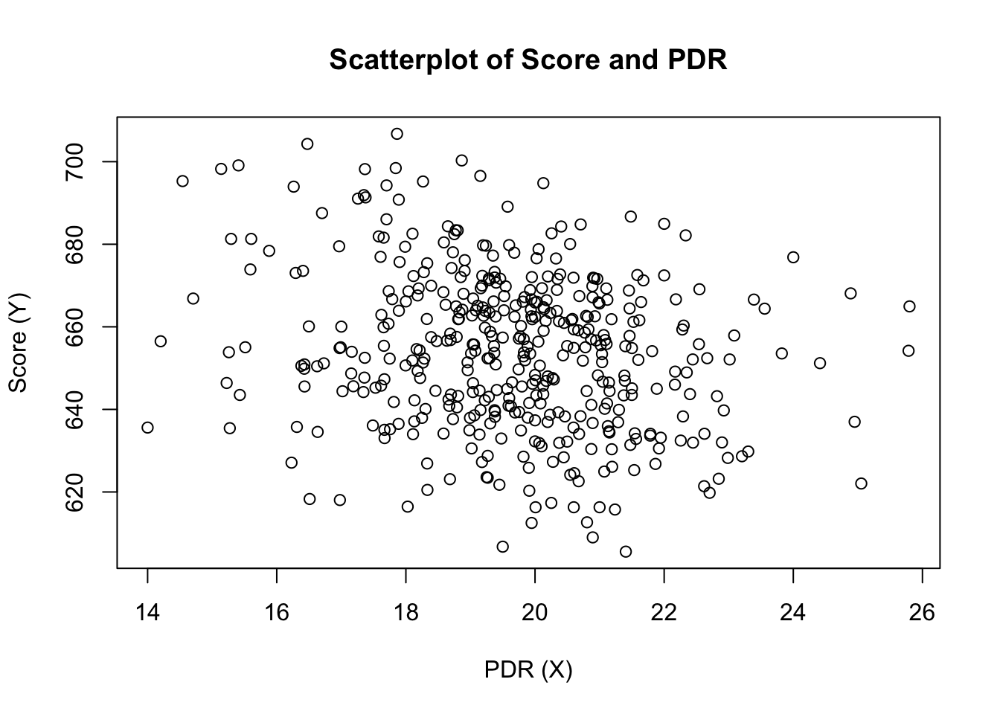
The plot shows the scatterplot of all observations on the patient-doctor ratio and patient score. We see that the points are strongly scattered, and that the variables are negatively correlated. That is, we expect to observe lower patient scores when their are more patients per doctor.
The function cor() (see ?cor for further info) can be used to compute the correlation between two numeric vectors.
cor(data$PDR, data$score)## [1] -0.2263627As the scatterplot already suggests, the correlation is negative but rather weak.
The task we are now facing is to find a line which best fits the data. Of course we could simply stick with graphical inspection and correlation analysis and then select the best fitting line by eyeballing. However, this would be rather subjective: different observers would draw different regression lines. On this account, we are interested in techniques that are less arbitrary. Such a technique is given by ordinary least squares (OLS) estimation.
The Ordinary Least Squares Estimator
The OLS estimator chooses the regression coefficients such that the estimated regression line is as “close” as possible to the observed data points. Here, closeness is measured by the sum of the squared mistakes made in predicting \(Y\) given \(X\). Let \(b_0\) and \(b_1\) be some estimators of \(\beta_0\) and \(\beta_1\). Then the sum of squared estimation mistakes can be expressed as
\[ \sum^n_{i = 1} (Y_i - b_0 - b_1 X_i)^2. \]
The OLS estimator in the simple regression model is the pair of estimators for intercept and slope which minimizes the expression above, which is summarized in Key Concept 15.
Key Concept 15
The OLS Estimator
The OLS estimators of the slope \(\beta_1\) and the intercept \(\beta_0\) in the simple linear regression model are \[\begin{align} \hat\beta_1 & = \frac{ \sum_{i = 1}^n (X_i - \overline{X})(Y_i - \overline{Y}) } { \sum_{i=1}^n (X_i - \overline{X})^2}, \\ \\ \hat\beta_0 & = \overline{Y} - \hat\beta_1 \overline{X}. \end{align}\] The OLS predicted values \(\widehat{Y}_i\) and residuals \(\hat{u}_i\) are \[\begin{align} \widehat{Y}_i & = \hat\beta_0 + \hat\beta_1 X_i,\\ \\ \hat{u}_i & = Y_i - \widehat{Y}_i. \end{align}\] The estimated intercept \(\hat{\beta}_0\), the slope parameter \(\hat{\beta}_1\) and the residuals \(\left(\hat{u}_i\right)\) are computed from a sample of \(n\) observations of \(X_i\) and \(Y_i\), \(i\), \(...\), \(n\). These are estimates of the unknown population intercept \(\left(\beta_0 \right)\), slope \(\left(\beta_1\right)\), and error term \((u_i)\).
The formulas presented above may not be very intuitive at first glance. The following interactive application aims to help you understand the mechanics of OLS. You can add observations by clicking into the coordinate system where the data are represented by points. Once two or more observations are available, the application computes a regression line using OLS and some statistics which are displayed in the right panel. The results are updated as you add further observations to the left panel. A double-click resets the application, i.e., all data are removed.
There are many possible ways to compute \(\hat{\beta}_0\) and \(\hat{\beta}_1\) in R. For example, we could implement the formulas presented in Key Concept 15 with two of R’s most basic functions: mean() and sum(). Before doing so we attach the data dataset.
attach(data) # allows to use the variables contained in CASchools directly
# compute beta_1_hat
beta_1 <- sum((PDR - mean(PDR)) * (score - mean(score))) / sum((PDR - mean(PDR))^2)
# compute beta_0_hat
beta_0 <- mean(score) - beta_1 * mean(PDR)
# print the results to the console
beta_1## [1] -2.279808beta_0## [1] 698.9329Note that we adress variables contained in the attached dataset data directly for the rest of this tutorial!
Of course, there are even more manual ways to perform these tasks. With OLS being one of the most widely-used estimation techniques, R of course already contains a built-in function named lm() (linear model) which can be used to carry out regression analysis.
The first argument of the function to be specified is, similar to plot(), the regression formula with the basic syntax y ~ x where y is the dependent variable and x the explanatory variable. The argument data determines the data set to be used in the regression. We now analyze the relationship between the patient scores and the patient-doctor ratio is analyzed, using lm().
# estimate the model and assign the result to linear_model
linear_model <- lm(score ~ PDR, data = data)
# print the standard output of the estimated lm object to the console
linear_model##
## Call:
## lm(formula = score ~ PDR, data = data)
##
## Coefficients:
## (Intercept) PDR
## 698.93 -2.28Let us add the estimated regression line to the plot. This time we also enlarge the ranges of both axes by setting the arguments xlim and ylim.
# plot the data
plot(score ~ PDR,
data = data,
main = "Scatterplot of Score and PDR",
xlab = "PDR (X)",
ylab = "Score (Y)",
xlim = c(10, 30),
ylim = c(600, 720))
# add the regression line
abline(linear_model) 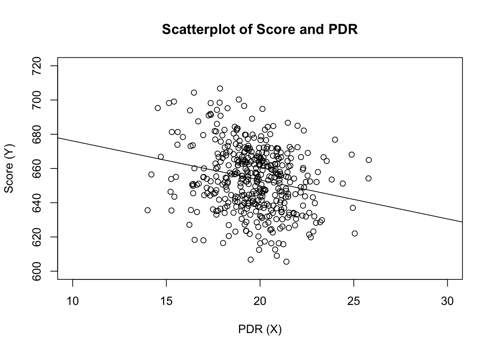
Did you notice that this time, we did not pass the intercept and slope parameters to abline? If you call abline() on an object of class lm which only contains a single regressor, R draws the regression line automatically!
1.9 Measures of Fit
After fitting a linear regression model, a natural question is how well the model describes the data. Visually, this amounts to assessing whether the observations are tightly clustered around the regression line. Both the coefficient of determination and the standard error of the regression measure how well the OLS Regression line fits the data.
The Coefficient of Determination
\(R^2\), the coefficient of determination, is the fraction of the sample variance of \(Y_i\) that is explained by \(X_i\). Mathematically, the \(R^2\) can be written as the ratio of the explained sum of squares to the total sum of squares. The explained sum of squares (\(ESS\)) is the sum of squared deviations of the predicted values \(\hat{Y_i}\), from the average of the \(Y_i\). The total sum of squares (\(TSS\)) is the sum of squared deviations of the \(Y_i\) from their average. Thus we have
\[\begin{align} ESS & = \sum_{i = 1}^n \left( \hat{Y_i} - \overline{Y} \right)^2, \\ TSS & = \sum_{i = 1}^n \left( Y_i - \overline{Y} \right)^2, \\ R^2 & = \frac{ESS}{TSS}. \end{align}\]
Since \(TSS = ESS + SSR\) we can also write \[ R^2 = 1- \frac{SSR}{TSS} \]
where \(SSR\) is the sum of squared residuals, a measure for the errors made when predicting the \(Y\) by \(X\). The \(SSR\) is defined as \[ SSR = \sum_{i=1}^n \hat{u}_i^2. \]
\(R^2\) lies between \(0\) and \(1\). It is easy to see that a perfect fit, i.e., no errors made when fitting the regression line, implies \(R^2 = 1\) since then we have \(SSR=0\). On the contrary, if our estimated regression line does not explain any variation in the \(Y_i\), we have \(ESS=0\) and consequently \(R^2=0\).
The Standard Error of the Regression
The Standard Error of the Regression (\(SER\)) is an estimator of the standard deviation of the residuals \(\hat{u}_i\). As such it measures the magnitude of a typical deviation from the regression line, i.e., the magnitude of a typical residual.
\[ SER = s_{\hat{u}} = \sqrt{s_{\hat{u}}^2} \ \ \ \text{where} \ \ \ s_{\hat{u} }^2 = \frac{1}{n-2} \sum_{i = 1}^n \hat{u}^2_i = \frac{SSR}{n - 2} \]
Remember that the \(u_i\) are unobserved. This is why we use their estimated counterparts, the residuals \(\hat{u}_i\), instead.
Application to Hospital Data
Both measures of fit can be obtained by using the function summary() with an lm object provided as the only argument. While the function lm() only prints out the estimated coefficients to the console, summary() provides additional predefined information such as the regression’s \(R^2\) and the \(SER\).mod_summary <- summary(linear_model)
mod_summary##
## Call:
## lm(formula = score ~ PDR, data = data)
##
## Residuals:
## Min 1Q Median 3Q Max
## -47.727 -14.251 0.483 12.822 48.540
##
## Coefficients:
## Estimate Std. Error t value Pr(>|t|)
## (Intercept) 698.9329 9.4675 73.825 < 2e-16 ***
## PDR -2.2798 0.4798 -4.751 2.78e-06 ***
## ---
## Signif. codes: 0 '***' 0.001 '**' 0.01 '*' 0.05 '.' 0.1 ' ' 1
##
## Residual standard error: 18.58 on 418 degrees of freedom
## Multiple R-squared: 0.05124, Adjusted R-squared: 0.04897
## F-statistic: 22.58 on 1 and 418 DF, p-value: 2.783e-06The \(R^2\) in the output is called Multiple R-squared and has a value of \(0.051\). Hence, \(5.1 \%\) of the variance of the dependent variable \(score\) is explained by the explanatory variable \(PDR\). That is, the regression explains little of the variance in \(score\), and much of the variation in patient scores remains unexplained.
The \(SER\) is called Residual standard error and equals \(18.58\). The unit of the \(SER\) is the same as the unit of the dependent variable. That is, on average the deviation of the actual patient score and the regression line is \(18.58\) points. Now, let us check whether summary() uses the same definitions for \(R^2\) and \(SER\) as we do when computing them manually.
# compute R^2 manually
SSR <- sum(mod_summary$residuals^2)
TSS <- sum((score - mean(score))^2)
R2 <- 1 - SSR/TSS
# print the value to the console
R2## [1] 0.05124009# compute SER manually
n <- nrow(data)
SER <- sqrt(SSR / (n-2))
# print the value to the console
SER## [1] 18.58097We find that the results coincide. Note that the values provided by summary() are rounded to two decimal places.
1.10 The Least Squares Assumptions
OLS performs well under a quite broad variety of different circumstances. However, there are some assumptions which need to be satisfied in order to ensure that the estimates are normally distributed in large samples (we discuss this in Chapter @ref(tsdotoe).
Key Concept 16
The Least Squares Assumptions
\[Y_i = \beta_0 + \beta_1 X_i + u_i \text{, } i = 1,\dots,n\] where 1. The error term \(u_i\) has conditional mean zero given \(X_i\): \(E(u_i|X_i) = 0\). 2. \((X_i,Y_i), i = 1,\dots,n\) are independent and identically distributed (i.i.d.) draws from their joint distribution. 3. Large outliers are unlikely: \(X_i\) and \(Y_i\) have nonzero finite fourth moments.
Assumption 1: The Error Term has Conditional Mean of Zero
This means that no matter which value we choose for \(X\), the error term \(u\) must not show any systematic pattern and must have a mean of \(0\). Consider the case that, unconditionally, \(E(u) = 0\), but for low and high values of \(X\), the error term tends to be positive and for midrange values of \(X\) the error tends to be negative. We can use R to construct such an example. To do so we generate our own data using R’s built-in random number generators.
We will use the following functions: * runif() - generates uniformly distributed random numbers * rnorm() - generates normally distributed random numbers * predict() - does predictions based on the results of model fitting functions like lm() * lines() - adds line segments to an existing plot
We start by creating a vector containing values that are uniformly distributed on the interval \([-5,5]\). This can be done with the function runif(). We also need to simulate the error term. For this we generate normally distributed random numbers with a mean equal to \(0\) and a variance of \(1\) using rnorm(). The \(Y\) values are obtained as a quadratic function of the \(X\) values and the error.
After generating the data we estimate both a simple regression model and a quadratic model that also includes the regressor \(X^2\) (this is a multiple regression model, see next lecture). Finally, we plot the simulated data and add the estimated regression line of a simple regression model as well as the predictions made with a quadratic model to compare the fit graphically.# set a seed to make the results reproducible
set.seed(321)
# simulate the data
X <- runif(50, min = -5, max = 5)
u <- rnorm(50, sd = 5)
# the true relation
Y <- X^2 + 2 * X + u
# estimate a simple regression model
mod_simple <- lm(Y ~ X)
# predict using a quadratic model
prediction <- predict(lm(Y ~ X + I(X^2)), data.frame(X = sort(X)))
# plot the results
plot(Y ~ X)
abline(mod_simple, col = "red")
lines(sort(X), prediction)
The plot shows what is meant by \(E(u_i|X_i) = 0\) and why it does not hold for the linear model:
Using the quadratic model (represented by the black curve) we see that there are no systematic deviations of the observation from the predicted relation. It is credible that the assumption is not violated when such a model is employed. However, using a simple linear regression model we see that the assumption is probably violated as \(E(u_i|X_i)\) varies with the \(X_i\).
Assumption 2: Independently and Identically Distributed Data
Most sampling schemes used when collecting data from populations produce i.i.d.-samples. For example, we could use R’s random number generator to randomly select student IDs from a university’s enrollment list and record age \(X\) and earnings \(Y\) of the corresponding students. This is a typical example of simple random sampling and ensures that all the \((X_i, Y_i)\) are drawn randomly from the same population.
A prominent example where the i.i.d. assumption is not fulfilled is time series data where we have observations on the same unit over time. For example, take \(X\) as patient health over time. Due to the aging process health declines with time, but there are also some non-deterministic influences that relate to environment, diet, lifestyle, etc. Using R we can easily simulate such a process and plot it.
We start the series with a total of 5000 patients and simulate the reduction in health with an autoregressive process that exhibits a downward movement in the long-run and has normally distributed errors. We cover more on autoregressive processes and time series analysis in general in the Advanced Data Analysis course. \[ health_t = -5 + 0.98 \cdot health_{t-1} + u_t \]
# set seed
set.seed(123)
# generate a date vector
Date <- seq(as.Date("1951/1/1"), as.Date("2031/1/1"), "years")
# initialize the health vector
X <- c(5000, rep(NA, length(Date)-1))
# generate time series observations with random influences
for (i in 2:length(Date)) {
X[i] <- -50 + 0.98 * X[i-1] + rnorm(n = 1, sd = 200)
}
#plot the results
plot(x = Date,
y = X,
type = "l",
col = "steelblue",
ylab = "Health metric",
xlab = "Time")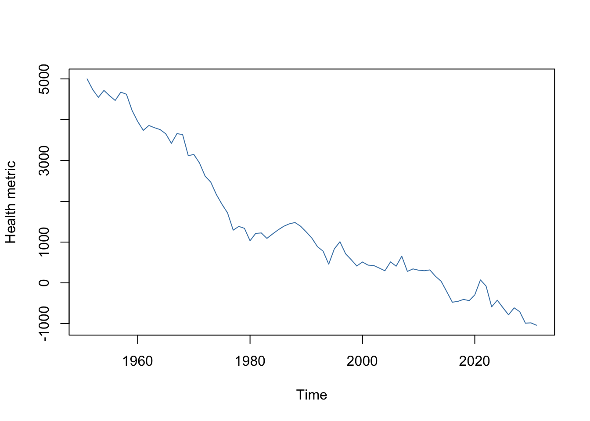
It is evident that the observations on patient health status cannot be independent in this example: the level of today’s health is correlated with tomorrows health. Thus, the i.i.d. assumption is violated.
Assumption 3: Large Outliers are Unlikely
It is easy to come up with situations where extreme observations, i.e., observations that deviate considerably from the usual range of the data, may occur. Such observations are called outliers. Technically speaking, assumption 3 requires that \(X\) and \(Y\) have a finite kurtosis.
Common cases where we want to exclude or (if possible) correct such outliers is when they are apparently typos, conversion errors or measurement errors. Even if it seems like extreme observations have been recorded correctly, it is advisable to exclude them before estimating a model since OLS suffers from sensitivity to outliers.
What does this mean? One can show that extreme observations receive heavy weighting in the estimation of the unknown regression coefficients when using OLS. Therefore, outliers can lead to strongly distorted estimates of regression coefficients. To get a better impression of this issue, consider the following application where we have placed some sample data on \(X\) and \(Y\) which are highly correlated. The relation between \(X\) and \(Y\) seems to be explained pretty well by the plotted regression line: all of the white data points lie close to the red regression line and we have \(R^2=0.92\).
Now go ahead and add a further observation at, say, \((18,2)\). This observations clearly is an outlier. The result is quite striking: the estimated regression line differs greatly from the one we adjudged to fit the data well. The slope is heavily downward biased and \(R^2\) decreased to a mere \(29\%\)!
Double-click inside the coordinate system to reset the app. Feel free to experiment. Choose different coordinates for the outlier or add additional ones.
As done above we use sample data generated using R’s random number functions rnorm() and runif(). We estimate two simple regression models, one based on the original data set and another using a modified set where one observation is change to be an outlier and then plot the results. In order to understand the complete code you should be familiar with the function sort() which sorts the entries of a numeric vector in ascending order.# set seed
set.seed(123)
# generate the data
X <- sort(runif(10, min = 30, max = 70))
Y <- rnorm(10 , mean = 200, sd = 50)
Y[9] <- 2000
# fit model with outlier
fit <- lm(Y ~ X)
# fit model without outlier
fitWithoutOutlier <- lm(Y[-9] ~ X[-9])
# plot the results
plot(Y ~ X)
abline(fit)
abline(fitWithoutOutlier, col = "red")
1.11 OLS Estimator Sampling Distribution
Because \(\hat{\beta}_0\) and \(\hat{\beta}_1\) are computed from a sample, the estimators themselves are random variables with a probability distribution — the so-called sampling distribution of the estimators — which describes the values they could take on over different samples. Although the sampling distribution of \(\hat\beta_0\) and \(\hat\beta_1\) can be complicated when the sample size is small and generally changes with the number of observations, \(n\), it is possible, provided the assumptions discussed in the book are valid, to make certain statements about it that hold for all \(n\). In particular \[ E(\hat{\beta}_0) = \beta_0 \ \ \text{and} \ \ E(\hat{\beta}_1) = \beta_1,\] that is, \(\hat\beta_0\) and \(\hat\beta_1\) are unbiased estimators of \(\beta_0\) and \(\beta_1\), the true parameters. If the sample is sufficiently large, by the central limit theorem the joint sampling distribution of the estimators is well approximated by the bivariate normal distribution (2.1). This implies that the marginal distributions are also normal in large samples. Core facts on the large-sample distributions of \(\hat\beta_0\) and \(\hat\beta_1\) are presented in Key Concept 17.
Key Concept 17
Large Sample Distribution of \(\hat\beta_0\) and \(\hat\beta_1\)
If the least squares assumptions hold, then in large samples \(\hat\beta_0\) and \(\hat\beta_1\) have a joint normal sampling distribution. The large sample normal distribution of \(\hat\beta_1\) is \(\mathcal{N}(\beta_1, \sigma^2_{\hat\beta_1})\), where the variance of the distribution, \(\sigma^2_{\hat\beta_1}\), is \[\begin{align} \sigma^2_{\hat\beta_1} = \frac{1}{n} \frac{Var \left[ \left(X_i - \mu_X \right) u_i \right]} {\left[ Var \left(X_i \right) \right]^2}. \end{align}\] The large sample normal distribution of \(\hat\beta_0\) is \(\mathcal{N}(\beta_0, \sigma^2_{\hat\beta_0})\) with \[\begin{align} \sigma^2_{\hat\beta_0} = \frac{1}{n} \frac{Var \left( H_i u_i \right)}{ \left[ E \left(H_i^2 \right) \right]^2 } \ , \ \text{where} \ \ H_i = 1 - \left[ \frac{\mu_X} {E \left( X_i^2\right)} \right] X_i. \end{align}\] The interactive simulation below continuously generates random samples \((X_i,Y_i)\) of \(200\) observations where \(E(Y\vert X) = 100 + 3X\), estimates a simple regression model, stores the estimate of the slope \(\beta_1\) and visualizes the distribution of the \(\widehat{\beta}_1\)s observed so far using a histogram. The idea here is that for a large number of \(\widehat{\beta}_1\)s, the histogram gives a good approximation of the sampling distribution of the estimator. By decreasing the time between two sampling iterations, it becomes clear that the shape of the histogram approaches the characteristic bell shape of a normal distribution centered at the true slope of \(3\).
Simulation Study 1
Whether the statements of Key Concept 17 really hold can also be verified using R. For this we first we build our own population of \(100000\) observations in total. To do this we need values for the independent variable \(X\), for the error term \(u\), and for the parameters \(\beta_0\) and \(\beta_1\). With these combined in a simple regression model, we compute the dependent variable \(Y\).
In our example we generate the numbers \(X_i\), \(i = 1\), … ,\(100000\) by drawing a random sample from a uniform distribution on the interval \([0,20]\). The realizations of the error terms \(u_i\) are drawn from a standard normal distribution with parameters \(\mu = 0\) and \(\sigma^2 = 100\) (note that rnorm() requires \(\sigma\) as input for the argument sd, see ?rnorm). Furthermore we chose \(\beta_0 = -2\) and \(\beta_1 = 3.5\) so the true model is \[ Y_i = -2 + 3.5 \cdot X_i. \] Finally, we store the results in a data.frame.
# simulate data
N <- 100000
X <- runif(N, min = 0, max = 20)
u <- rnorm(N, sd = 10)
# population regression
Y <- -2 + 3.5 * X + u
population <- data.frame(X, Y)From now on we will consider the previously generated data as the true population (which of course would be unknown in a real world application, otherwise there would be no reason to draw a random sample in the first place). The knowledge about the true population and the true relationship between \(Y\) and \(X\) can be used to verify the statements made in Key Concept 17. First, let us calculate the true variances \(\sigma^2_{\hat{\beta}_0}\) and \(\sigma^2_{\hat{\beta}_1}\) for a randomly drawn sample of size \(n = 100\).
# set sample size
n <- 100
# compute the variance of beta_hat_0
H_i <- 1 - mean(X) / mean(X^2) * X
var_b0 <- var(H_i * u) / (n * mean(H_i^2)^2 )
# compute the variance of hat_beta_1
var_b1 <- var( ( X - mean(X) ) * u ) / (100 * var(X)^2)# print variances to the console
var_b0## [1] 4.045066var_b1## [1] 0.03018694Now let us assume that we do not know the true values of \(\beta_0\) and \(\beta_1\) and that it is not possible to observe the whole population. However, we can observe a random sample of \(n\) observations. Then, it would not be possible to compute the true parameters but we could obtain estimates of \(\beta_0\) and \(\beta_1\) from the sample data using OLS. However, we know that these estimates are outcomes of random variables themselves since the observations are randomly sampled from the population. Key Concept 17 describes their distributions for large \(n\). When drawing a single sample of size \(n\) it is not possible to make any statement about these distributions. Things change if we repeat the sampling scheme many times and compute the estimates for each sample: using this procedure we simulate outcomes of the respective distributions.
To achieve this in R, we employ the following approach: - We assign the number of repetitions, say \(10000\), to reps and then initialize a matrix fit were the estimates obtained in each sampling iteration shall be stored row-wise. Thus fit has to be a matrix of dimensions reps\(\times2\). - In the next step we draw reps random samples of size n from the population and obtain the OLS estimates for each sample. The results are stored as row entries in the outcome matrix fit. This is done using a for() loop. - At last, we estimate variances of both estimators using the sampled outcomes and plot histograms of the latter. We also add a plot of the density functions belonging to the distributions that follow from Key Concept 17. The function bquote() is used to obtain math expressions in the titles and labels of both plots. See ?bquote.
# set repetitions and sample size
n <- 100
reps <- 10000
# initialize the matrix of outcomes
fit <- matrix(ncol = 2, nrow = reps)
# loop sampling and estimation of the coefficients
for (i in 1:reps){
sample <- population[sample(1:N, n), ]
fit[i, ] <- lm(Y ~ X, data = sample)$coefficients
}
# compute variance estimates using outcomes
var(fit[, 1])## [1] 4.186832var(fit[, 2])## [1] 0.03096199# divide plotting area as 1-by-2 array
par(mfrow = c(1, 2))
# plot histograms of beta_0 estimates
hist(fit[, 1],
cex.main = 1,
main = bquote(The ~ Distribution ~ of ~ 10000 ~ beta[0] ~ Estimates),
xlab = bquote(hat(beta)[0]),
freq = F)
# add true distribution to plot
curve(dnorm(x,
-2,
sqrt(var_b0)),
add = T,
col = "darkred")
# plot histograms of beta_hat_1
hist(fit[, 2],
cex.main = 1,
main = bquote(The ~ Distribution ~ of ~ 10000 ~ beta[1] ~ Estimates),
xlab = bquote(hat(beta)[1]),
freq = F)
# add true distribution to plot
curve(dnorm(x,
3.5,
sqrt(var_b1)),
add = T,
col = "darkred")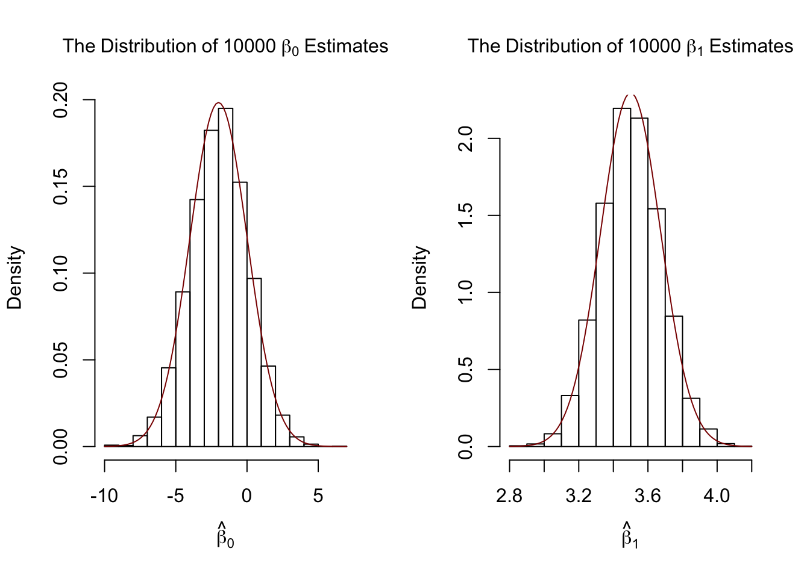
Our variance estimates support the statements made in Key Concept 17, coming close to the theoretical values. The histograms suggest that the distributions of the estimators can be well approximated by the respective theoretical normal distributions stated in Key Concept 17.
Simulation Study 2
A further result implied by Key Concept 17 is that both estimators are consistent, i.e., they converge in probability to the true parameters we are interested in. This is because they are asymptotically unbiased and their variances converge to \(0\) as \(n\) increases.
We can check this by repeating the simulation above for a sequence of increasing sample sizes. This means we no longer assign the sample size but a vector of sample sizes: n <- c(…).
Let us look at the distributions of \(\beta_1\). The idea here is to add an additional call of for() to the code. This is done in order to loop over the vector of sample sizes n.
For each of the sample sizes we carry out the same simulation as before but plot a density estimate for the outcomes of each iteration over n. Notice that we have to change n to n[j] in the inner loop to ensure that the j\(^{th}\) element of n is used. In the simulation, we use sample sizes of \(100, 250, 1000\) and \(3000\). Consequently we have a total of four distinct simulations using different sample sizes.
# set seed for reproducibility
set.seed(1)
# set repetitions and the vector of sample sizes
reps <- 1000
n <- c(100, 250, 1000, 3000)
# initialize the matrix of outcomes
fit <- matrix(ncol = 2, nrow = reps)
# divide the plot panel in a 2-by-2 array
par(mfrow = c(2, 2))
# loop sampling and plotting
# outer loop over n
for (j in 1:length(n)) {
# inner loop: sampling and estimating of the coefficients
for (i in 1:reps){
sample <- population[sample(1:N, n[j]), ]
fit[i, ] <- lm(Y ~ X, data = sample)$coefficients
}
# draw density estimates
plot(density(fit[ ,2]), xlim=c(2.5, 4.5),
col = j,
main = paste("n=", n[j]),
xlab = bquote(hat(beta)[1]))
}
We find that, as \(n\) increases, the distribution of \(\hat\beta_1\) concentrates around its mean, i.e., its variance decreases. Put differently, the likelihood of observing estimates close to the true value of \(\beta_1 = 3.5\) grows as we increase the sample size. The same behavior can be observed if we analyze the distribution of \(\hat\beta_0\) instead.
Simulation Study 3
Furthermore, the variance of the OLS estimator for \(\beta_1\) decreases as the variance of the \(X_i\) increases. In other words, as we increase the amount of information provided by the regressor, that is, increasing \(Var(X)\), which is used to estimate \(\beta_1\), we become more confident that the estimate is close to the true value (i.e., \(Var(\hat\beta_1)\) decreases).
We can visualize this by sampling observations \((X_i,Y_i)\), \(i=1,\dots,100\) from a bivariate normal distribution with \[E(X)=E(Y)=5,\] \[Var(X)=Var(Y)=5\] and \[Cov(X,Y)=4.\] Formally, this is written down as
\[\begin{align}
\begin{pmatrix}
X \\
Y \\
\end{pmatrix}
\overset{i.i.d.}{\sim} & \ \mathcal{N}
\left[
\begin{pmatrix}
5 \\
5 \\
\end{pmatrix}, \
\begin{pmatrix}
5 & 4 \\
4 & 5 \\
\end{pmatrix}
\right].
\end{align}\] To carry out the random sampling, we make use of the function mvrnorm() from the package MASS [@R-MASS] which allows to draw random samples from multivariate normal distributions, see ?mvtnorm. Next, we use subset() to split the sample into two subsets such that the first set, set1, consists of observations that fulfill the condition \(\lvert X - \overline{X} \rvert > 1\) and the second set, set2, includes the remainder of the sample. We then plot both sets and use different colors to distinguish the observations.
# load the MASS package
library(MASS)
# set seed for reproducibility
set.seed(4)
# simulate bivarite normal data
bvndata <- mvrnorm(100,
mu = c(5, 5),
Sigma = cbind(c(5, 4), c(4, 5)))
# assign column names / convert to data.frame
colnames(bvndata) <- c("X", "Y")
bvndata <- as.data.frame(bvndata)
# subset the data
set1 <- subset(bvndata, abs(mean(X) - X) > 1)
set2 <- subset(bvndata, abs(mean(X) - X) <= 1)
# plot both data sets
plot(set1,
xlab = "X",
ylab = "Y",
pch = 19)
points(set2,
col = "steelblue",
pch = 19)
It is clear that observations that are close to the sample average of the \(X_i\) have less variance than those that are farther away.
Now, if we were to draw a line as accurately as possible through either of the two sets it is intuitive that choosing the observations indicated by the black dots, i.e., using the set of observations which has larger variance than the blue ones, would result in a more precise line. Now, let us use OLS to estimate slope and intercept for both sets of observations. We then plot the observations along with both regression lines.
# estimate both regression lines
lm.set1 <- lm(Y ~ X, data = set1)
lm.set2 <- lm(Y ~ X, data = set2)
# plot observations
plot(set1, xlab = "X", ylab = "Y", pch = 19)
points(set2, col = "steelblue", pch = 19)
# add both lines to the plot
abline(lm.set1, col = "green")
abline(lm.set2, col = "red")
Evidently, the green regression line does far better in describing data sampled from the bivariate normal distribution stated in (4.3) than the red line. This is a nice example for demonstrating why we are interested in a high variance of the regressor \(X\): more variance in the \(X_i\) means more information from which the precision of the estimation benefits.
2 Hypothesis Tests in Linear Regression
We may now use our knowledge about the sampling distribution of the OLS estimator in order to make statements regarding its uncertainty.
These subsections cover the following topics:
Testing Hypotheses regarding regression coefficients.
Confidence intervals for regression coefficients.
Regression when \(X\) is a dummy variable.
Heteroskedasticity and Homoskedasticity.
The packages scales [@R-scales] is required for reproduction of the code chunks presented throughout the rest of this tutorial. The package scales provides additional generic plot scaling methods. Make sure the package is installed before you proceed. The safest way to do so is by checking whether the following code chunk executes without any errors.
library(scales)2.1 Two-Sided Slope Hypotheses Testing
Using the fact that \(\hat{\beta}_1\) is approximately normally distributed in large samples (see Key Concept 17), testing hypotheses about the true value \(\beta_1\) can be done.
Key Concept 18
General Form of the \(t\)-Statistic
Remember that a general \(t\)-statistic has the form \[ t = \frac{\text{estimated value} - \text{hypothesized value}}{\text{standard error of the estimator}}.\]
Key Concept 19
Testing Hypotheses regarding \(\beta_1\)
For testing the hypothesis \(H_0: \beta_1 = \beta_{1,0}\), we need to perform the following steps: 1. Compute the standard error of \(\hat{\beta}_1\), \(SE(\hat{\beta}_1)\) \[ SE(\hat{\beta}_1) = \sqrt{ \hat{\sigma}^2_{\hat{\beta}_1} } \ \ , \ \
\hat{\sigma}^2_{\hat{\beta}_1} = \frac{1}{n} \times \frac{\frac{1}{n-2} \sum_{i=1}^n (X_i - \overline{X})^2 \hat{u_i}^2 }{ \left[ \frac{1}{n} \sum_{i=1}^n (X_i - \overline{X})^2 \right]^2}.
\] 2. Compute the \(t\)-statistic \[ t = \frac{\hat{\beta}_1 - \beta_{1,0}}{ SE(\hat{\beta}_1) }. \] 3. Given a two sided alternative (\(H_1:\beta_1 \neq \beta_{1,0}\)) we reject at the \(5\%\) level if \(|t^{act}| > 1.96\) or, equivalently, if the \(p\)-value is less than \(0.05\).
Recall the definition of the \(p\)-value:
\[\begin{align*}
p \text{-value} =& \, \text{Pr}_{H_0} \left[ \left| \frac{ \hat{\beta}_1 - \beta_{1,0} }{ SE(\hat{\beta}_1) } \right| > \left| \frac{ \hat{\beta}_1^{act} - \beta_{1,0} }{ SE(\hat{\beta}_1) } \right| \right] \\
=& \, \text{Pr}_{H_0} (|t| > |t^{act}|) \\
\approx& \, 2 \cdot \Phi(-|t^{act}|)
\end{align*}\]
The last transformation is due to the normal approximation for large samples.
Consider again the OLS regression output that gave us the regression line
\[ \widehat{Score} \ = \underset{(9.47)}{698.9} - \underset{(0.49)}{2.28} \times PDR \ , \ R^2=0.051 \ , \ SER=18.6. \]
Copy and execute the following code chunk if the above model object is not available in your working environment.
# load the dataset
data <- read.table("hospitals.txt", header=TRUE)
# add patient-doctor ratio
data$PDR <- data$patients/data$doctors
# add average patient score
data$score <- (data$outpatient_1 + data$outpatient_2)/2
# estimate the model
linear_model <- lm(score ~ PDR, data = data) For testing a hypothesis concerning the slope parameter (the coefficient on \(PDR\)), we need \(SE(\hat{\beta}_1)\), the standard error of the respective point estimator. As is common in the literature, standard errors are presented in parentheses below the point estimates.
Key Concept 18 reveals that it is rather cumbersome to compute the standard error and thereby the \(t\)-statistic by hand. The question you should be asking yourself right now is: can we obtain these values with minimum effort using R? Yes, we can. Let us first use summary() to get a summary on the estimated coefficients in linear_model.
Note: We keep things simple at the beginning and thus start out with simple examples that do not allow for robust inference. Standard errors that are robust to heteroskedasticity are introduced below @ref(hah) where we also demonstrate how they can be computed using R.
# print the summary of the coefficients to the console
summary(linear_model)$coefficients## Estimate Std. Error t value Pr(>|t|)
## (Intercept) 698.932949 9.4674911 73.824516 6.569846e-242
## PDR -2.279808 0.4798255 -4.751327 2.783308e-06The second column of the coefficients’ summary, reports \(SE(\hat\beta_0)\) and \(SE(\hat\beta_1)\). Also, in the third column t value, we find \(t\)-statistics \(t^{act}\) suitable for tests of the separate hypotheses \(H_0: \beta_0=0\) and \(H_0: \beta_1=0\). Furthermore, the output provides us with \(p\)-values corresponding to both tests against the two-sided alternatives \(H_1:\beta_0\neq0\) respectively \(H_1:\beta_1\neq0\) in the fourth column of the table.
Let us have a closer look at the test of
\[H_0: \beta_1=0 \ \ \ vs. \ \ \ H_1: \beta_1 \neq 0.\]
We have \[ t^{act} = \frac{-2.279808 - 0}{0.4798255} \approx - 4.75. \]
What does this tell us about the significance of the estimated coefficient? We reject the null hypothesis at the \(5\%\) level of significance since \(|t^{act}| > 1.96\). That is, the observed test statistic falls into the rejection region as \(p\text{-value} = 2.78\cdot 10^{-6} < 0.05\). We conclude that the coefficient is significantly different from zero. In other words, we reject the hypothesis that the class size has no influence on the students test scores at the \(5\%\) level.
Note that although the difference is negligible in the present case as we will see later, summary() does not perform the normal approximation but calculates \(p\)-values using the \(t\)-distribution instead. Generally, the degrees of freedom of the assumed \(t\)-distribution are determined in the following manner:
\[ \text{DF} = n - k - 1 \]
where \(n\) is the number of observations used to estimate the model and \(k\) is the number of regressors, excluding the intercept. In our case, we have \(n=420\) observations and the only regressor is \(PDR\) so \(k=1\). The simplest way to determine the model degrees of freedom is
# determine residual degrees of freedom
linear_model$df.residual## [1] 418Hence, for the assumed sampling distribution of \(\hat\beta_1\) we have
\[\hat\beta_1 \sim t_{418}\] such that the \(p\)-value for a two-sided significance test can be obtained by executing the following code:
2 * pt(-4.751327, df = 418)## [1] 2.78331e-06The result is very close to the value provided by summary(). However since \(n\) is sufficiently large one could just as well use the standard normal density to compute the \(p\)-value:
2 * pnorm(-4.751327)## [1] 2.02086e-06The difference is indeed negligible. These findings tell us that, if \(H_0: \beta_1 = 0\) is true and we were to repeat the whole process of gathering observations and estimating the model, observing a \(\hat\beta_1 \geq |-2.28|\) is very unlikely!
Using R we may visualize how such a statement is made when using the normal approximation. Do not let the following code chunk deter you: the code is somewhat longer than the usual examples and looks unappealing but there is a lot of repetition since color shadings and annotations are added on both tails of the normal distribution. We recommend to execute the code step by step in order to see how the graph is augmented with the annotations.
# Plot the standard normal on the support [-6,6]
t <- seq(-6, 6, 0.01)
plot(x = t,
y = dnorm(t, 0, 1),
type = "l",
col = "steelblue",
lwd = 2,
yaxs = "i",
axes = F,
ylab = "",
main = expression("Calculating the p-value of a Two-sided Test when" ~ t^act ~ "=-0.47"),
cex.lab = 0.7,
cex.main = 1)
tact <- -4.75
axis(1, at = c(0, -1.96, 1.96, -tact, tact), cex.axis = 0.7)
# Shade the critical regions using polygon():
# critical region in left tail
polygon(x = c(-6, seq(-6, -1.96, 0.01), -1.96),
y = c(0, dnorm(seq(-6, -1.96, 0.01)), 0),
col = 'orange')
# critical region in right tail
polygon(x = c(1.96, seq(1.96, 6, 0.01), 6),
y = c(0, dnorm(seq(1.96, 6, 0.01)), 0),
col = 'orange')
# Add arrows and texts indicating critical regions and the p-value
arrows(-3.5, 0.2, -2.5, 0.02, length = 0.1)
arrows(3.5, 0.2, 2.5, 0.02, length = 0.1)
arrows(-5, 0.16, -4.75, 0, length = 0.1)
arrows(5, 0.16, 4.75, 0, length = 0.1)
text(-3.5, 0.22,
labels = expression("0.025"~"="~over(alpha, 2)),
cex = 0.7)
text(3.5, 0.22,
labels = expression("0.025"~"="~over(alpha, 2)),
cex = 0.7)
text(-5, 0.18,
labels = expression(paste("-|",t[act],"|")),
cex = 0.7)
text(5, 0.18,
labels = expression(paste("|",t[act],"|")),
cex = 0.7)
# Add ticks indicating critical values at the 0.05-level, t^act and -t^act
rug(c(-1.96, 1.96), ticksize = 0.145, lwd = 2, col = "darkred")
rug(c(-tact, tact), ticksize = -0.0451, lwd = 2, col = "darkgreen")
The \(p\)-Value is the area under the curve to left of \(-4.75\) plus the area under the curve to the right of \(4.75\). As we already know from the calculations above, this value is very small.
2.2 Regression Coefficient Confidence Intervals
As we already know, estimates of the regression coefficients \(\beta_0\) and \(\beta_1\) are subject to sampling uncertainty. Therefore, we will never exactly estimate the true value of these parameters from sample data in an empirical application. However, we may construct confidence intervals for the intercept and the slope parameter.
A \(95\%\) confidence interval for \(\beta_i\) has two equivalent definitions:
- The interval is the set of values for which a hypothesis test to the level of \(5\%\) cannot be rejected.
- The interval has a probability of \(95\%\) to contain the true value of \(\beta_i\). So in \(95\%\) of all samples that could be drawn, the confidence interval will cover the true value of \(\beta_i\).
We also say that the interval has a confidence level of \(95\%\). The idea of the confidence interval is summarized in Key Concept 20.
Key Concept 20
\(\beta_i\) Confidence Interval
Imagine you could draw all possible random samples of given size. The interval that contains the true value \(\beta_i\) in \(95\%\) of all samples is given by the expression \[ \text{CI}_{0.95}^{\beta_i} = \left[ \hat{\beta}_i - 1.96 \times SE(\hat{\beta}_i) \, , \, \hat{\beta}_i + 1.96 \times SE(\hat{\beta}_i) \right]. \] Equivalently, this interval can be seen as the set of null hypotheses for which a \(5\%\) two-sided hypothesis test does not reject.
Simulation Study: Confidence Intervals
To get a better understanding of confidence intervals we conduct another simulation study. For now, assume that we have the following sample of \(n=100\) observations on a single variable \(Y\) where
\[ Y_i \overset{i.i.d}{\sim} \mathcal{N}(5,25), \ i = 1, \dots, 100.\]# set seed for reproducibility
set.seed(4)
# generate and plot the sample data
Y <- rnorm(n = 100,
mean = 5,
sd = 5)
plot(Y,
pch = 19,
col = "steelblue")
We assume that the data is generated by the model
\[ Y_i = \mu + \epsilon_i \]
where \(\mu\) is an unknown constant and we know that \(\epsilon_i \overset{i.i.d.}{\sim} \mathcal{N}(0,25)\). In this model, the OLS estimator for \(\mu\) is given by \[ \hat\mu = \overline{Y} = \frac{1}{n} \sum_{i=1}^n Y_i, \] i.e., the sample average of the \(Y_i\). It further holds that
\[ SE(\hat\mu) = \frac{\sigma_{\epsilon}}{\sqrt{n}} = \frac{5}{\sqrt{100}} \]
A large-sample \(95\%\) confidence interval for \(\mu\) is then given by
\[\begin{equation} CI^{\mu}_{0.95} = \left[\hat\mu - 1.96 \times \frac{5}{\sqrt{100}} \ , \ \hat\mu + 1.96 \times \frac{5}{\sqrt{100}} \right]. \end{equation}\]
It is fairly easy to compute this interval in R by hand. The following code chunk generates a named vector containing the interval bounds:
cbind(CIlower = mean(Y) - 1.96 * 5 / 10, CIupper = mean(Y) + 1.96 * 5 / 10)## CIlower CIupper
## [1,] 4.502625 6.462625Knowing that \(\mu = 5\) we see that, for our example data, the confidence interval covers true value.
As opposed to real world examples, we can use R to get a better understanding of confidence intervals by repeatedly sampling data, estimating \(\mu\) and computing the confidence interval for \(\mu\) as in @ref(eq:KI).
The procedure is as follows:
- We initialize the vectors lower and upper in which the simulated interval limits are to be saved. We want to simulate \(10000\) intervals so both vectors are set to have this length.
- We use a for() loop to sample \(100\) observations from the \(\mathcal{N}(5,25)\) distribution and compute \(\hat\mu\) as well as the boundaries of the confidence interval in every iteration of the loop.
- At last we join lower and upper in a matrix.
# set seed
set.seed(1)
# initialize vectors of lower and upper interval boundaries
lower <- numeric(10000)
upper <- numeric(10000)
# loop sampling / estimation / CI
for(i in 1:10000) {
Y <- rnorm(100, mean = 5, sd = 5)
lower[i] <- mean(Y) - 1.96 * 5 / 10
upper[i] <- mean(Y) + 1.96 * 5 / 10
}
# join vectors of interval bounds in a matrix
CIs <- cbind(lower, upper)According to Key Concept 20 we expect that the fraction of the \(10000\) simulated intervals saved in the matrix CIs that contain the true value \(\mu=5\) should be roughly \(95\%\). We can easily check this using logical operators.
mean(CIs[, 1] <= 5 & 5 <= CIs[, 2])## [1] 0.9487The simulation shows that the fraction of intervals covering \(\mu=5\), i.e., those intervals for which \(H_0: \mu = 5\) cannot be rejected is close to the theoretical value of \(95\%\).
Let us draw a plot of the first \(100\) simulated confidence intervals and indicate those which do not cover the true value of \(\mu\). We do this via horizontal lines representing the confidence intervals on top of each other.
# identify intervals not covering mu
# (4 intervals out of 100)
ID <- which(!(CIs[1:100, 1] <= 5 & 5 <= CIs[1:100, 2]))
# initialize the plot
plot(0,
xlim = c(3, 7),
ylim = c(1, 100),
ylab = "Sample",
xlab = expression(mu),
main = "Confidence Intervals")
# set up color vector
colors <- rep(gray(0.6), 100)
colors[ID] <- "red"
# draw reference line at mu=5
abline(v = 5, lty = 2)
# add horizontal bars representing the CIs
for(j in 1:100) {
lines(c(CIs[j, 1], CIs[j, 2]),
c(j, j),
col = colors[j],
lwd = 2)
}
For the first \(100\) samples, the true null hypothesis is rejected in four cases so these intervals do not cover \(\mu=5\). We have indicated the intervals which lead to a rejection of the null red.
Let us now come back to the example of patient scores and patient-doctor ratios. The regression model is stored in linear_model. An easy way to get \(95\%\) confidence intervals for \(\beta_0\) and \(\beta_1\), the coefficients on (intercept) and PDR, is to use the function confint(). We only have to provide a fitted model object as an input to this function. The confidence level is set to \(95\%\) by default but can be modified by setting the argument level, see ?confint.
# compute 95% confidence interval for coefficients in 'linear_model'
confint(linear_model)## 2.5 % 97.5 %
## (Intercept) 680.32312 717.542775
## PDR -3.22298 -1.336636Let us check if the calculation is done as we expect it to be for \(\beta_1\), the coefficient on STR.
# compute 95% confidence interval for coefficients in 'linear_model' by hand
lm_summ <- summary(linear_model)
c("lower" = lm_summ$coef[2,1] - qt(0.975, df = lm_summ$df[2]) * lm_summ$coef[2, 2],
"upper" = lm_summ$coef[2,1] + qt(0.975, df = lm_summ$df[2]) * lm_summ$coef[2, 2])## lower upper
## -3.222980 -1.336636The upper and the lower bounds coincide. We have used the \(0.975\)-quantile of the \(t_{418}\) distribution to get the exact result reported by confint. Obviously, this interval does not contain the value zero which, as we have already seen in the previous section, leads to the rejection of the null hypothesis \(\beta_{1,0} = 0\).
2.3 Regression with a Binary Variable
Instead of using a continuous regressor \(X\), we might be interested in running the regression
\[ Y_i = \beta_0 + \beta_1 D_i + u_i \]
where \(D_i\) is a binary variable, a so-called dummy variable. For example, we may define \(D_i\) as follows:
\[ D_i = \begin{cases} 1 \ \ \text{if $PDR$ in $i^{th}$ hospital < 20} \\ 0 \ \ \text{if $PDR$ in $i^{th}$ hospital $\geq$ 20} \\ \end{cases} \]
The regression model now is
\[ Score_i = \beta_0 + \beta_1 D_i + u_i. \]
Let us see how these data look like in a scatter plot:
# Create the dummy variable as defined above
data$D <- data$PDR < 20
# Plot the data
plot(data$D, data$score, # provide the data to be plotted
pch = 20, # use filled circles as plot symbols
cex = 0.5, # set size of plot symbols to 0.5
col = "Steelblue", # set the symbols' color to "Steelblue"
xlab = expression(D[i]), # Set title and axis names
ylab = "Test Score",
main = "Dummy Regression")
With \(D\) as the regressor, it is not useful to think of \(\beta_1\) as a slope parameter since \(D_i \in \{0,1\}\), i.e., we only observe two discrete values instead of a continuum of regressor values. There is no continuous line depicting the conditional expectation function \(E(Score_i | D_i)\) since this function is solely defined for \(x\)-positions \(0\) and \(1\).
Therefore, the interpretation of the coefficients in this regression model is as follows:
\(E(Y_i | D_i = 0) = \beta_0\), so \(\beta_0\) is the expected patient score in hospitals where \(D_i=0\) where \(PDR\) is below \(20\).
\(E(Y_i | D_i = 1) = \beta_0 + \beta_1\) or, using the result above, \(\beta_1 = E(Y_i | D_i = 1) - E(Y_i | D_i = 0)\). Thus, \(\beta_1\) is the difference in group specific expectations, i.e., the difference in expected patient score between hospitals with \(PDR < 20\) and those with \(PDR \geq 20\).
We will now use R to estimate the dummy regression model:
# estimate the dummy regression model
dummy_model <- lm(score ~ D, data = data)
summary(dummy_model)##
## Call:
## lm(formula = score ~ D, data = data)
##
## Residuals:
## Min 1Q Median 3Q Max
## -50.496 -14.029 -0.346 12.884 49.504
##
## Coefficients:
## Estimate Std. Error t value Pr(>|t|)
## (Intercept) 650.077 1.393 466.666 < 2e-16 ***
## DTRUE 7.169 1.847 3.882 0.00012 ***
## ---
## Signif. codes: 0 '***' 0.001 '**' 0.01 '*' 0.05 '.' 0.1 ' ' 1
##
## Residual standard error: 18.74 on 418 degrees of freedom
## Multiple R-squared: 0.0348, Adjusted R-squared: 0.0325
## F-statistic: 15.07 on 1 and 418 DF, p-value: 0.0001202The vector data$D has the type logical (to see this, use typeof(data$D)) which is shown in the output of summary(dummy_model): the label DTRUE states that all entries TRUE are coded as 1 and all entries FALSE are coded as 0. Thus, the interpretation of the coefficient DTRUE is as stated above for \(\beta_1\).
One can see that the expected patient score in hospitals with \(PDR < 20\) (\(D_i = 1\)) is predicted to be \(650.1 + 7.17 = 657.27\) while districts with \(PDR \geq 20\) (\(D_i = 0\)) are expected to have an average test score of only \(650.1\).
Group specific predictions can be added to the plot by execution of the following code chunk.
# add group specific predictions to the plot
points(x = data$D,
y = predict(dummy_model),
col = "red",
pch = 20)Here we use the function predict() to obtain estimates of the group specific means. The red dots represent these sample group averages. Accordingly, \(\hat{\beta}_1 = 7.17\) can be seen as the difference in group averages.
summary(dummy_model) also answers the question whether there is a statistically significant difference in group means. This in turn would support the hypothesis that patient health is better when there are more doctors in hospitals. We can assess this by a two-tailed test of the hypothesis \(H_0: \beta_1 = 0\). Conveniently, the \(t\)-statistic and the corresponding \(p\)-value for this test are computed by summary().
Since t value \(= 3.88 > 1.96\) we reject the null hypothesis at the \(5\%\) level of significance. The same conclusion results when using the \(p\)-value, which reports significance up to the \(0.00012\%\) level.
As done with linear_model, we may alternatively use the function confint() to compute a \(95\%\) confidence interval for the true difference in means and see if the hypothesized value is an element of this confidence set.
# confidence intervals for coefficients in the dummy regression model
confint(dummy_model)## 2.5 % 97.5 %
## (Intercept) 647.338594 652.81500
## DTRUE 3.539562 10.79931We reject the hypothesis that there is no difference between group means at the \(5\%\) significance level since \(\beta_{1,0} = 0\) lies outside of \([3.54, 10.8]\), the \(95\%\) confidence interval for the coefficient on \(D\).
2.4 Hetero/Homoskedasticity
All inference made in the previous sections relies on the assumption that the error variance does not vary as regressor values change. But this will often not be the case in empirical applications.
Key Concept 21
Hetero/Homoskedasticity
- The error term of our regression model is homoskedastic if the variance of the conditional distribution of \(u_i\) given \(X_i\), \(Var(u_i|X_i=x)\), is constant for all observations in our sample: \[ \text{Var}(u_i|X_i=x) = \sigma^2 \ \forall \ i=1,\dots,n. \]
- If instead there is dependence of the conditional variance of \(u_i\) on \(X_i\), the error term is said to be heteroskedastic. We then write \[ \text{Var}(u_i|X_i=x) = \sigma_i^2 \ \forall \ i=1,\dots,n. \]
- Homoskedasticity is a special case of heteroskedasticity.
For a better understanding of heteroskedasticity, we generate some bivariate heteroskedastic data, estimate a linear regression model and then use box plots to depict the conditional distributions of the residuals.
# load scales package for adjusting color opacities
library(scales)
# generate some heteroskedastic data:
# set seed for reproducibility
set.seed(123)
# set up vector of x coordinates
x <- rep(c(10, 15, 20, 25), each = 25)
# initialize vector of errors
e <- c()
# sample 100 errors such that the variance increases with x
e[1:25] <- rnorm(25, sd = 10)
e[26:50] <- rnorm(25, sd = 15)
e[51:75] <- rnorm(25, sd = 20)
e[76:100] <- rnorm(25, sd = 25)
# set up y
y <- 720 - 3.3 * x + e
# Estimate the model
mod <- lm(y ~ x)
# Plot the data
plot(x = x,
y = y,
main = "An Example of Heteroskedasticity",
xlab = "Patient-Doctor Ratio",
ylab = "Health Score",
cex = 0.5,
pch = 19,
xlim = c(8, 27),
ylim = c(600, 710))
# Add the regression line to the plot
abline(mod, col = "darkred")
# Add boxplots to the plot
boxplot(formula = y ~ x,
add = TRUE,
at = c(10, 15, 20, 25),
col = alpha("gray", 0.4),
border = "black")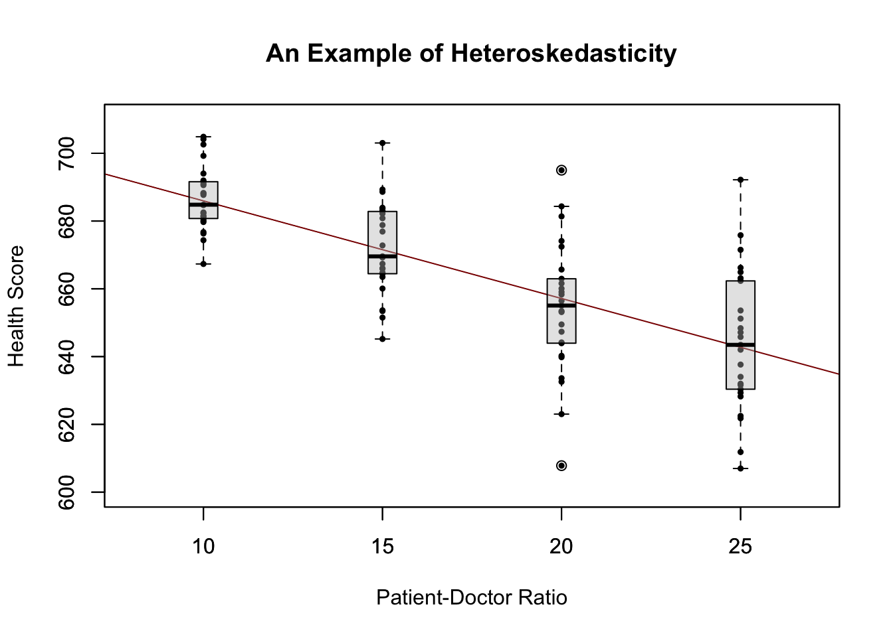
We have used the formula argument y ~ x in boxplot() to specify that we want to split up the vector y into groups according to x. boxplot(y ~ x) generates a boxplot for each of the groups in y defined by x.
For this artificial data it is clear that the conditional error variances differ. Specifically, we observe that the variance in patient scores (and therefore the variance of the errors committed) increases with the patient-doctor ratio.
Should We Care?
To answer the question whether we should worry about heteroskedasticity being present, consider the variance of \(\hat\beta_1\) under the assumption of homoskedasticity. In this case we have
\[ \sigma^2_{\hat\beta_1} = \frac{\sigma^2_u}{n \cdot \sigma^2_X} \]
which is a simplified version of the general equation presented in Key Concept 19. summary() estimates this by
\[ \overset{\sim}{\sigma}^2_{\hat\beta_1} = \frac{SER^2}{\sum_{i=1}^n (X_i - \overline{X})^2} \ \ \text{where} \ \ SER=\frac{1}{n-2} \sum_{i=1}^n \hat u_i^2. \]
Thus summary() estimates the homoskedasticity-only standard error
\[ \sqrt{ \overset{\sim}{\sigma}^2_{\hat\beta_1} } = \sqrt{ \frac{SER^2}{\sum_{i=1}^n(X_i - \overline{X})^2} }. \]
This is in fact an estimator for the standard deviation of the estimator \(\hat{\beta}_1\) that is inconsistent for the true value \(\sigma^2_{\hat\beta_1}\) when there is heteroskedasticity. The implication is that \(t\)-statistics computed in the manner of Key Concept 20 do not follow a standard normal distribution, even in large samples. This issue may invalidate inference when using the previously treated tools for hypothesis testing: we should be cautious when making statements about the significance of regression coefficients on the basis of \(t\)-statistics as computed by summary() or confidence intervals produced by confint() if it is doubtful for the assumption of homoskedasticity to hold!
We will now use R to compute the homoskedasticity-only standard error for \(\hat{\beta}_1\) in the test score regression model linear_model by hand and see that it matches the value produced by summary().
# Store model summary in 'model'
model <- summary(linear_model)
# Extract the standard error of the regression from model summary
SER <- model$sigma
# Compute the variation in 'size'
V <- (nrow(data)-1) * var(data$PDR)
# Compute the standard error of the slope parameter's estimator and print it
SE.beta_1.hat <- sqrt(SER^2/V)
SE.beta_1.hat## [1] 0.4798255# Use logical operators to see if the value computed by hand matches the one provided
# in mod$coefficients. Round estimates to four decimal places
round(model$coefficients[2, 2], 4) == round(SE.beta_1.hat, 4)## [1] TRUEIndeed, the estimated values are equal.
Robust Standard Errors
Consistent estimation of \(\sigma_{\hat{\beta}_1}\) under heteroskedasticity is granted when the following robust estimator is used.
\[ SE(\hat{\beta}_1) = \sqrt{ \frac{1}{n} \cdot \frac{ \frac{1}{n} \sum_{i=1}^n (X_i - \overline{X})^2 \hat{u}_i^2 }{ \left[ \frac{1}{n} \sum_{i=1}^n (X_i - \overline{X})^2 \right]^2} } \tag{5.6} \]
Standard error estimates computed this way are also referred to as Eicker-Huber-White standard errors.
It can be quite cumbersome to do this calculation by hand. Luckily, there are R function for that purpose. A convenient one named vcovHC() is part of the package sandwich. This function can compute a variety of standard errors.
Let us now compute robust standard error estimates for the coefficients in linear_model.
library(plm)
# compute heteroskedasticity-robust standard errors
vcov <- vcovHC(linear_model, type = "HC1")
vcov## (Intercept) PDR
## (Intercept) 107.419993 -5.3639114
## PDR -5.363911 0.2698692The output of vcovHC() is the variance-covariance matrix of coefficient estimates. We are interested in the square root of the diagonal elements of this matrix, i.e., the standard error estimates.
# compute the square root of the diagonal elements in vcov
robust_se <- sqrt(diag(vcov))
robust_se## (Intercept) PDR
## 10.3643617 0.5194893Now assume we want to generate a coefficient summary as provided by summary() but with robust standard errors of the coefficient estimators, robust \(t\)-statistics and corresponding \(p\)-values for the regression model linear_model. This can be done using coeftest() from the package lmtest, see ?coeftest. Further we specify in the argument vcov. that vcov, the Eicker-Huber-White estimate of the variance matrix we have computed before, should be used.
library(lmtest)
# we invoke the function `coeftest()` on our model
coeftest(linear_model, vcov. = vcov)##
## t test of coefficients:
##
## Estimate Std. Error t value Pr(>|t|)
## (Intercept) 698.93295 10.36436 67.4362 < 2.2e-16 ***
## PDR -2.27981 0.51949 -4.3886 1.447e-05 ***
## ---
## Signif. codes: 0 '***' 0.001 '**' 0.01 '*' 0.05 '.' 0.1 ' ' 1We see that the values reported in the column Std. Error are equal those from sqrt(diag(vcov)).
How severe are the implications of using homoskedasticity-only standard errors in the presence of heteroskedasticity? The answer is: it depends. As mentioned above we face the risk of drawing wrong conclusions when conducting significance tests.
Let us illustrate this by generating another example of a heteroskedastic data set and using it to estimate a simple regression model. We take
\[ Y_i = \beta_1 \cdot X_i + u_i \ \ , \ \ u_i \overset{i.i.d.}{\sim} \mathcal{N}(0,0.36 \cdot X_i^2) \]
with \(\beta_1=1\) as the data generating process. Clearly, the assumption of homoskedasticity is violated here since the variance of the errors is a nonlinear, increasing function of \(X_i\) but the errors have zero mean and are i.i.d. As before, we are interested in estimating \(\beta_1\).
# generate heteroskedastic data
X <- 1:500
Y <- rnorm(n = 500, mean = X, sd = 0.6 * X)
# estimate a simple regression model
reg <- lm(Y ~ X)We plot the data and add the regression line.
# plot the data
plot(x = X, y = Y,
pch = 19,
col = "steelblue",
cex = 0.8)
# add the regression line to the plot
abline(reg,
col = "darkred",
lwd = 1.5)
The plot shows that the data are heteroskedastic as the variance of \(Y\) grows with \(X\). We next conduct a significance test of the (true) null hypothesis \(H_0: \beta_1 = 1\) twice, once using the homoskedasticity-only standard error formula and once with the robust version (5.6). An easy way to do this in R is the function linearHypothesis() from the package car, see ?linearHypothesis. It allows to test linear hypotheses about parameters in linear models in a similar way as done with a \(t\)-statistic and offers various robust covariance matrix estimators. We test by comparing the tests’ \(p\)-values to the significance level of \(5\%\).
library(car)
# test hypthesis using the default standard error formula
linearHypothesis(reg, hypothesis.matrix = "X = 1")$'Pr(>F)'[2] < 0.05## [1] TRUE# test hypothesis using the robust standard error formula
linearHypothesis(reg, hypothesis.matrix = "X = 1", white.adjust = "hc1")$'Pr(>F)'[2] < 0.05## [1] FALSEThis is a good example of what can go wrong if we ignore heteroskedasticity: for the data set at hand the default method rejects the null hypothesis \(\beta_1 = 1\) although it is true. When using the robust standard error formula the test does not reject the null. Of course, we could this might just be a coincidence and both tests do equally well in maintaining the type I error rate of \(5\%\). This can be further investigated by computing Monte Carlo estimates of the rejection frequencies of both tests on the basis of a large number of random samples. We proceed as follows:
- initialize vectors t and t.rob.
- Using a for() loop, we generate \(10000\) heteroskedastic random samples of size \(1000\), estimate the regression model and check whether the tests falsely reject the null at the level of \(5\%\) using comparison operators. The results are stored in the respective vectors t and t.rob.
- After the simulation, we compute the fraction of false rejections for both tests.
# initialize vectors t and t.rob
t <- c()
t.rob <- c()
# loop sampling and estimation
for (i in 1:10000) {
# sample data
X <- 1:1000
Y <- rnorm(n = 1000, mean = X, sd = 0.6 * X)
# estimate regression model
reg <- lm(Y ~ X)
# homoskedasdicity-only significance test
t[i] <- linearHypothesis(reg, "X = 1")$'Pr(>F)'[2] < 0.05
# robust significance test
t.rob[i] <- linearHypothesis(reg, "X = 1", white.adjust = "hc1")$'Pr(>F)'[2] < 0.05
}
# compute the fraction of false rejections
round(cbind(t = mean(t), t.rob = mean(t.rob)), 3)## t t.rob
## [1,] 0.073 0.05These results reveal the increased risk of falsely rejecting the null using the homoskedasticity-only standard error for the testing problem at hand: with the common standard error estimator, \(7.28\%\) of all tests falsely reject the null hypothesis. In contrast, with the robust test statistic we are closer to the nominal level of \(5\%\).
2.5 The Gauss-Markov Theorem
When estimating regression models, we know that the results of the estimation procedure are random. However, when using unbiased estimators, at least on average, we estimate the true parameter. When comparing different unbiased estimators, it is therefore interesting to know which one has the highest precision: being aware that the likelihood of estimating the exact value of the parameter of interest is \(0\) in an empirical application, we want to make sure that the likelihood of obtaining an estimate very close to the true value is as high as possible. This means we want to use the estimator with the lowest variance of all unbiased estimators, provided we care about unbiasedness. The Gauss-Markov theorem states that, in the class of conditionally unbiased linear estimators, the OLS estimator has this property under certain conditions.
Key Concept 22
The Gauss-Markov Theorem for \(\hat{\beta}_1\)
Suppose that the assumptions hold and that the errors are homoskedastic. The OLS estimator is the best (in the sense of smallest variance) linear conditionally unbiased estimator (BLUE) in this setting. Let us have a closer look at what this means: - Estimators of \(\beta_1\) that are linear functions of the \(Y_1, \dots, Y_n\) and that are unbiased conditionally on the regressor \(X_1, \dots, X_n\) can be written as \[ \overset{\sim}{\beta}_1 = \sum_{i=1}^n a_i Y_i \] where the \(a_i\) are weights that are allowed to depend on the \(X_i\) but not on the \(Y_i\). - We already know that \(\overset{\sim}{\beta}_1\) has a sampling distribution: \(\overset{\sim}{\beta}_1\) is a linear function of the \(Y_i\) which are random variables. If now \[ E(\overset{\sim}{\beta}_1 | X_1, \dots, X_n) = \beta_1, \] \(\overset{\sim}{\beta}_1\) is a linear unbiased estimator of \(\beta_1\), conditionally on the \(X_1, \dots, X_n\). - We may ask if \(\overset{\sim}{\beta}_1\) is also the best estimator in this class, i.e., the most efficient one of all linear conditionally unbiased estimators where “most efficient” means smallest variance. The weights \(a_i\) play an important role here and it turns out that OLS uses just the right weights to have the BLUE property.
Simulation Study: BLUE Estimator
Consider the case of a regression of \(Y_i,\dots,Y_n\) only on a constant. Here, the \(Y_i\) are assumed to be a random sample from a population with mean \(\mu\) and variance \(\sigma^2\). The OLS estimator in this model is simply the sample mean.
\[\begin{equation} \hat{\beta}_1 = \sum_{i=1}^n \underbrace{\frac{1}{n}}_{=a_i} Y_i \end{equation}\]
Clearly, each observation is weighted by
\[a_i = \frac{1}{n}.\]
and we also know that \(\text{Var}(\hat{\beta}_1)=\frac{\sigma^2}{n}\).
We now use R to conduct a simulation study that demonstrates what happens to the variance if different weights \[ w_i = \frac{1 \pm \epsilon}{n} \] are assigned to either half of the sample \(Y_1, \dots, Y_n\) instead of using \(\frac{1}{n}\), the OLS weights.
# set sample size and number of repetitions
n <- 100
reps <- 1e5
# choose epsilon and create a vector of weights as defined above
epsilon <- 0.8
w <- c(rep((1 + epsilon) / n, n / 2),
rep((1 - epsilon) / n, n / 2) )
# draw a random sample y_1,...,y_n from the standard normal distribution,
# use both estimators 1e5 times and store the result in the vectors 'ols' and
# 'weightedestimator'
ols <- rep(NA, reps)
weightedestimator <- rep(NA, reps)
for (i in 1:reps) {
y <- rnorm(n)
ols[i] <- mean(y)
weightedestimator[i] <- crossprod(w, y)
}
# plot kernel density estimates of the estimators' distributions:
# OLS
plot(density(ols),
col = "purple",
lwd = 3,
main = "Density of OLS and Weighted Estimator",
xlab = "Estimates")
# weighted
lines(density(weightedestimator),
col = "steelblue",
lwd = 3)
# add a dashed line at 0 and add a legend to the plot
abline(v = 0, lty = 2)
legend('topright',
c("OLS", "Weighted"),
col = c("purple", "steelblue"),
lwd = 3)
What conclusion can we draw from the result?
- Both estimators seem to be unbiased: the means of their estimated distributions are zero.
- The estimator using weights that deviate from those implied by OLS is less efficient than the OLS estimator: there is higher dispersion when weights are \(w_i = \frac{1 \pm 0.8}{100}\) instead of \(w_i=\frac{1}{100}\) as required by the OLS solution.
Hence, the simulation results support the Gauss-Markov Theorem.
2.6 Small Sample t-Statistics
The three OLS assumptions discussed above are the foundation for the results on the large sample distribution of the OLS estimators in the simple regression model. What can be said about the distribution of the estimators and their \(t\)-statistics when the sample size is small and the population distribution of the data is unknown? Provided that the three least squares assumptions hold and the errors are normally distributed and homoskedastic (we refer to these conditions as the homoskedastic normal regression assumptions), we have normally distributed estimators and \(t\)-distributed test statistics in small samples.
Recall the definition of a \(t\)-distributed variable
\[ \frac{Z}{\sqrt{W/M}} \sim t_M\]
where \(Z\) is a standard normal random variable, \(W\) is \(\chi^2\) distributed with \(M\) degrees of freedom and \(Z\) and \(W\) are independent.
Let us simulate the distribution of regression \(t\)-statistics based on a large number of small random samples, say \(n=20\), and compare the simulated distributions to the theoretical distributions which should be \(t_{18}\), the \(t\)-distribution with \(18\) degrees of freedom (recall that \(\text{DF}=n-k-1\)).
# initialize two vectors
beta_0 <- c()
beta_1 <- c()
# loop sampling / estimation / t statistics
for (i in 1:10000) {
X <- runif(20, 0, 20)
Y <- rnorm(n = 20, mean = X)
reg <- summary(lm(Y ~ X))
beta_0[i] <- (reg$coefficients[1, 1] - 0)/(reg$coefficients[1, 2])
beta_1[i] <- (reg$coefficients[2, 1] - 1)/(reg$coefficients[2, 2])
}
# plot the distributions and compare with t_18 density:
# divide plotting area
par(mfrow = c(1, 2))
# plot the simulated density of beta_0
plot(density(beta_0),
lwd = 2 ,
main = expression(widehat(beta)[0]),
xlim = c(-4, 4))
# add the t_18 density to the plot
curve(dt(x, df = 18),
add = T,
col = "red",
lwd = 2,
lty = 2)
# plot the simulated density of beta_1
plot(density(beta_1),
lwd = 2,
main = expression(widehat(beta)[1]), xlim = c(-4, 4)
)
# add the t_18 density to the plot
curve(dt(x, df = 18),
add = T,
col = "red",
lwd = 2,
lty = 2) 
The outcomes are consistent with our expectations: the empirical distributions of both estimators seem to track the theoretical \(t_{18}\) distribution quite closely.